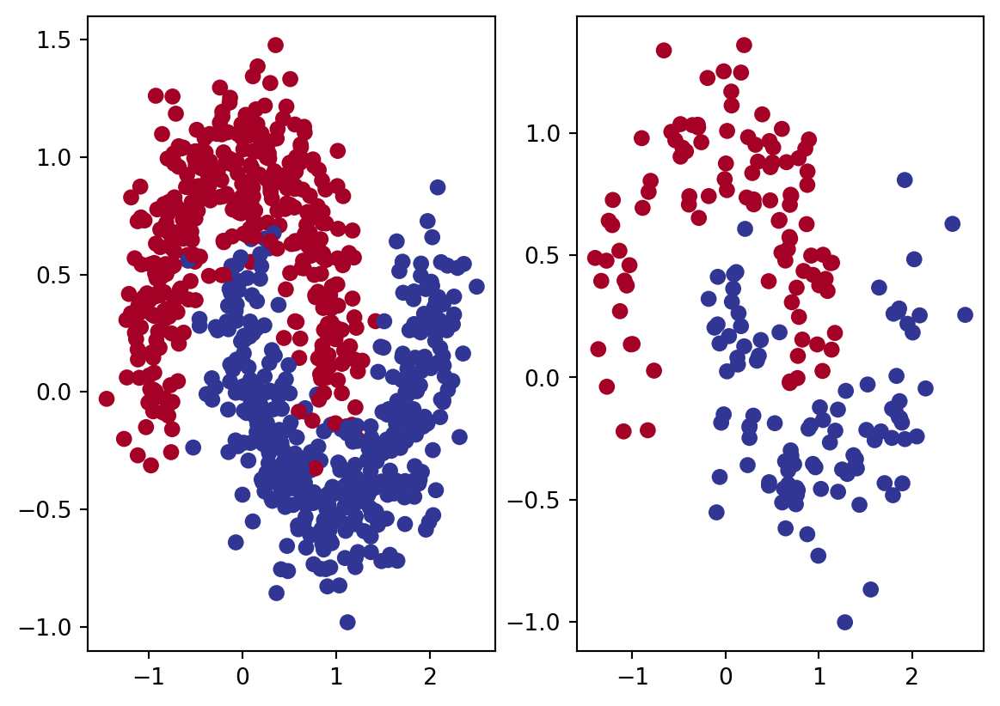
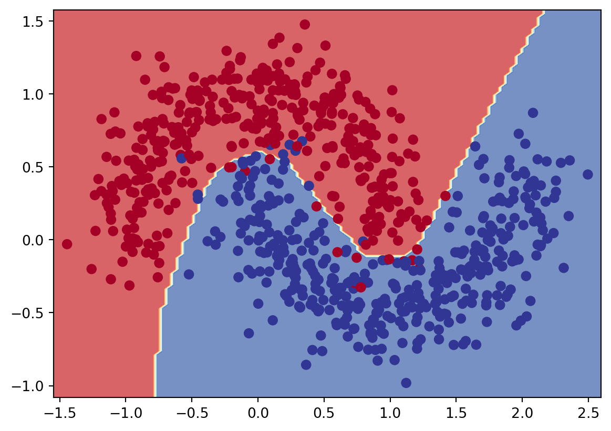
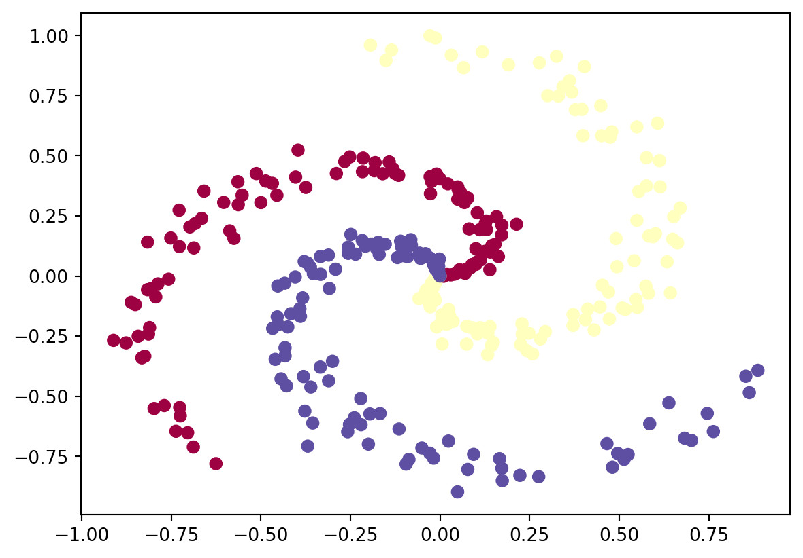
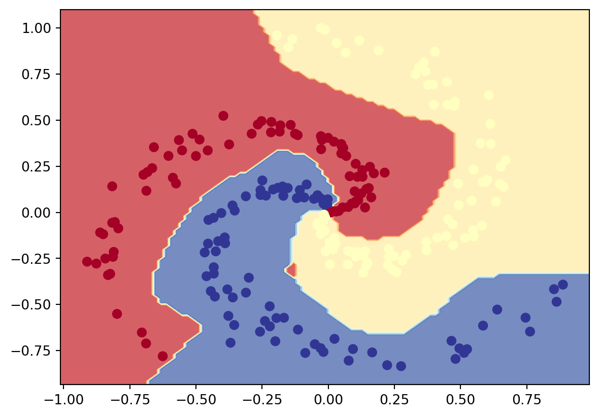

import numpy as np
import torch
import torch.nn as nn
from matplotlib import pyplot as plt
from sklearn.datasets import make_moons
from sklearn.model_selection import train_test_split
from sklearn.metrics import accuracy_score
from ml_utils import plot_decision_boundaryPyTorch Exercises
Imports
PyTorch Exercises 00 pytorch fundamentals
https://www.learnpytorch.io/00_pytorch_fundamentals/#exercises
torch.manual_seed(42)
torch.cuda.manual_seed(1234)
x = torch.randn(7 ,7)
y = torch.randn(1 ,7)
z = torch.matmul(x, y.T)
device = torch.device("cuda" if torch.cuda.is_available() else "cpu")
torch.manual_seed(42)
gpu_1 = torch.randn(2 ,3).to(device)
torch.manual_seed(42)
gpu_2 = torch.randn(2 ,3).to(device)
gpu_3 = torch.matmul(gpu_1, gpu_2.T)
print(gpu_3.max())
print(gpu_3.argmax())
print(gpu_3.reshape(4)[3])
print(gpu_3.argmin())
torch.manual_seed(7)
original_tensor = torch.randn(1, 1, 1, 10)
squeezed_tensor = original_tensor.squeeze()
print(original_tensor.shape, original_tensor)
print(squeezed_tensor.shape, squeezed_tensor)tensor(1.3486, device='cuda:0')
tensor(3, device='cuda:0')
tensor(1.3486, device='cuda:0')
tensor(1, device='cuda:0')
torch.Size([1, 1, 1, 10]) tensor([[[[-0.1468, 0.7861, 0.9468, -1.1143, 1.6908, -0.8948, -0.3556,
1.2324, 0.1382, -1.6822]]]])
torch.Size([10]) tensor([-0.1468, 0.7861, 0.9468, -1.1143, 1.6908, -0.8948, -0.3556, 1.2324,
0.1382, -1.6822])PyTorch Exercises 01 pytorch Workflow fundamentals
device = torch.device("cuda" if torch.cuda.is_available() else "cpu")
x = torch.arange(0, 1, 0.0025, dtype=torch.float32).unsqueeze(dim=1).to(device)
print(x.shape)
target_bias = 0.9
target_weight = 0.3
y = target_bias + target_weight * x
training_split = int(0.8 * len(x))
x_train, y_train = x[:training_split], y[:training_split]
x_val, y_val = x[training_split:], y[training_split:]
plt.scatter(x_train.cpu(), y_train.cpu(), label="train", color="blue")
plt.scatter(x_val.cpu(), y_val.cpu(), label="validation", color="orange")
plt.legend()
plt.xlabel("x")
plt.ylabel("y")
plt.show()
class LinearRegression(nn.Module):
def __init__(self):
super().__init__()
self.weight = nn.Parameter(torch.randn(1, device=device))
self.bias = nn.Parameter(torch.randn(1, device=device))
def forward(self, x):
return self.weight * x + self.bias
torch.manual_seed(2)
model_0 = LinearRegression()
loss_fn = nn.L1Loss()
optimizer = torch.optim.SGD(model_0.parameters(), lr=0.02)
nun_epochs = 300
epochs = []
train_losses = []
val_losses = []
for epoch in range(nun_epochs):
model_0.train()
y_logits = model_0(x_train)
loss = loss_fn(y_logits, y_train)
optimizer.zero_grad()
loss.backward()
optimizer.step()
model_0.eval()
with torch.inference_mode():
y_val_logits = model_0(x_val)
val_loss = loss_fn(y_val_logits, y_val)
epochs.append(epoch)
train_losses.append(loss.item())
val_losses.append(val_loss.item())
if epoch % 20 == 0:
print(f"epoch {epoch+1}: train loss {loss}, val loss {val_loss}")
plt.plot(epochs, train_losses, label="train")
plt.plot(epochs, val_losses, label="val")
plt.xlabel("epoch")
plt.ylabel("loss")
plt.legend()
plt.show()
with torch.inference_mode():
y_logits = model_0(x_val)
plt.scatter(x_train.detach().cpu(), y_train.detach().cpu(), label="train", color="green")
plt.scatter(x_val.cpu(), y_val.cpu(), label="validation", color="orange")
plt.scatter(x_val.cpu(), y_logits.cpu(), label="predictions", color="blue")
plt.legend()
plt.xlabel("x")
plt.ylabel("y")
plt.show()
torch.save(model_0.state_dict(), "model_0.pth")
model_0_loaded = LinearRegression()
model_0_loaded.load_state_dict(torch.load("model_0.pth"))
with torch.inference_mode():
y_logits = model_0_loaded(x_val)
plt.scatter(x_train.detach().cpu(), y_train.detach().cpu(), label="train", color="green")
plt.scatter(x_val.cpu(), y_val.cpu(), label="validation", color="orange")
plt.scatter(x_val.cpu(), y_logits.cpu(), label="predictions", color="blue")
plt.legend()
plt.xlabel("x")
plt.ylabel("y")
plt.show()torch.Size([400, 1])
epoch 1: train loss 1.256136417388916, val loss 1.0901395082473755
epoch 21: train loss 0.792536199092865, val loss 0.546789288520813
epoch 41: train loss 0.3289359509944916, val loss 0.030328065156936646
epoch 61: train loss 0.1377410739660263, val loss 0.26404279470443726
epoch 81: train loss 0.12036710232496262, val loss 0.27378952503204346
epoch 101: train loss 0.1066260114312172, val loss 0.24720819294452667
epoch 121: train loss 0.09295617789030075, val loss 0.21629105508327484
epoch 141: train loss 0.07928847521543503, val loss 0.18416239321231842
epoch 161: train loss 0.0656210333108902, val loss 0.15220680832862854
epoch 181: train loss 0.05195329710841179, val loss 0.12007813900709152
epoch 201: train loss 0.03828587755560875, val loss 0.08812284469604492
epoch 221: train loss 0.024618105962872505, val loss 0.056167688220739365
epoch 241: train loss 0.010950678959488869, val loss 0.024039505049586296
epoch 261: train loss 0.016762902960181236, val loss 0.012556073255836964
epoch 281: train loss 0.016762902960181236, val loss 0.012556073255836964


PyTorch Exercises 02 pytorch classification
device = torch.device("cuda:0" if torch.cuda.is_available() else "cpu")
NUM_SAMPLES = 1000
RANDOM_SEED = 42
X, y = make_moons(NUM_SAMPLES, noise=0.2, random_state=RANDOM_SEED)
X = torch.from_numpy(X).float().to(device)
y = torch.from_numpy(y).float().to(device)
X_train, X_test, y_train, y_test = train_test_split(X, y, test_size=0.2, random_state=RANDOM_SEED)
print(X_train.shape, X_test.shape, y_train.shape, y_test.shape)
plt.subplot(1, 2, 1)
plt.scatter(X_train.cpu()[:, 0], X_train.cpu()[:, 1], c=y_train.cpu(), cmap=plt.cm.RdYlBu)
plt.subplot(1, 2, 2)
plt.scatter(X_test.cpu()[:, 0], X_test.cpu()[:, 1], c=y_test.cpu(), cmap=plt.cm.RdYlBu)
plt.show()
class LogisticRegression(nn.Module):
def __init__(self, in_features, out_features):
super().__init__()
self.sequential = nn.Sequential(
nn.Linear(in_features, 64),
nn.ReLU(),
nn.Linear(64, 64),
nn.ReLU(),
nn.Linear(64, out_features),
)
def forward(self, x):
return self.sequential(x).squeeze(-1)
torch.manual_seed(42)
torch.cuda.manual_seed(42)
model1 = LogisticRegression(2, 1).to(device)
loss_fn = nn.BCEWithLogitsLoss()
optimizer = torch.optim.SGD(model1.parameters(), lr=0.01)
NUM_EPOCHS = 10000
epochs = []
train_losses = []
val_losses = []
train_accs = []
val_accs = []
for epoch in range(NUM_EPOCHS):
model1.train()
y_logits = model1(X_train.squeeze())
y_preds = torch.round(torch.sigmoid(y_logits))
train_acc = accuracy_score(y_train.detach().cpu(), y_preds.detach().cpu())
train_accs.append(train_acc)
loss = loss_fn(y_logits, y_train)
optimizer.zero_grad()
loss.backward()
optimizer.step()
model1.eval()
with torch.inference_mode():
y_val_logits = model1(X_test)
y_preds = torch.round(torch.sigmoid(y_val_logits))
val_acc = accuracy_score(y_test.detach().cpu(), y_preds.detach().cpu())
val_accs.append(val_acc)
val_loss = loss_fn(y_val_logits, y_test)
epochs.append(epoch)
train_losses.append(loss.item())
val_losses.append(val_loss.item())
if epoch % 10 == 0:
print(f"epoch {epoch+1}: train loss {loss} | train acc {train_acc} | val loss {val_loss} | val acc {val_acc}")
plot_decision_boundary(model1, X_train, y_train)
plt.show()
def tanh(x):
return (torch.exp(x) - torch.exp(-x)) / (torch.exp(x) + torch.exp(-x))
# Multiclass classification for spiral dataset from CS231n
POINTS_PER_CLASS = 100
DIMENSIONALITY = 2
NUM_CLASSES = 3
X = torch.zeros(POINTS_PER_CLASS * NUM_CLASSES, DIMENSIONALITY)
y = torch.zeros(POINTS_PER_CLASS * NUM_CLASSES, dtype=torch.long)
for class_number in range(NUM_CLASSES):
ix = range(POINTS_PER_CLASS * class_number, POINTS_PER_CLASS * (class_number + 1))
r = torch.linspace(0.0, 1, POINTS_PER_CLASS)
t = torch.linspace(class_number * 4, (class_number + 1) * 4, POINTS_PER_CLASS) + torch.randn(POINTS_PER_CLASS) * 0.2
X[ix] = torch.stack([r * torch.cos(t), r * torch.sin(t)], dim=1)
y[ix] = class_number
plt.scatter(X[:, 0], X[:, 1], c=y, s=40, cmap=plt.cm.Spectral)
plt.show()
torch.manual_seed(42)
torch.cuda.manual_seed(42)
model2 = LogisticRegression(DIMENSIONALITY, NUM_CLASSES).to(device)
loss_fn = nn.CrossEntropyLoss()
optimizer = torch.optim.Adam(model2.parameters(), lr=0.01)
X = X.to(device)
y = y.to(device)
X_train, X_test, y_train, y_test = train_test_split(X, y, test_size=0.2, random_state=42)
NUM_EPOCHS = 1000
epochs = []
train_losses = []
val_losses = []
train_accs = []
val_accs = []
for epoch in range(NUM_EPOCHS):
model2.train()
y_logits = model2(X_train)
y_preds = torch.argmax(y_logits, dim=1)
train_acc = accuracy_score(y_train.detach().cpu(), y_preds.detach().cpu())
train_accs.append(train_acc)
loss = loss_fn(y_logits, y_train)
optimizer.zero_grad()
loss.backward()
optimizer.step()
model2.eval()
with torch.inference_mode():
y_val_logits = model2(X_test)
y_val_preds = torch.argmax(y_val_logits, dim=1)
val_acc = accuracy_score(y_test.detach().cpu(), y_val_preds.detach().cpu())
val_accs.append(val_acc)
val_loss = loss_fn(y_val_logits, y_test)
epochs.append(epoch)
train_losses.append(loss.item())
val_losses.append(val_loss.item())
if epoch % 10 == 0:
print(f"epoch {epoch+1}: train loss {loss} | train acc {train_acc} | val loss {val_loss} | val acc {val_acc}")
plot_decision_boundary(model2, X_train, y_train)
plt.show()torch.Size([800, 2]) torch.Size([200, 2]) torch.Size([800]) torch.Size([200])
epoch 1: train loss 0.6863923668861389 | train acc 0.57625 | val loss 0.6870741844177246 | val acc 0.545
epoch 11: train loss 0.6743022203445435 | train acc 0.70125 | val loss 0.6758744716644287 | val acc 0.66
epoch 21: train loss 0.6626609563827515 | train acc 0.75375 | val loss 0.6650825142860413 | val acc 0.7
epoch 31: train loss 0.6513379812240601 | train acc 0.76875 | val loss 0.6545702815055847 | val acc 0.705
epoch 41: train loss 0.6402432322502136 | train acc 0.78125 | val loss 0.6442570090293884 | val acc 0.71
epoch 51: train loss 0.6292856931686401 | train acc 0.785 | val loss 0.6340676546096802 | val acc 0.72
epoch 61: train loss 0.6183872818946838 | train acc 0.7925 | val loss 0.6239457726478577 | val acc 0.73
epoch 71: train loss 0.6075125932693481 | train acc 0.7975 | val loss 0.6138460636138916 | val acc 0.75
epoch 81: train loss 0.5966327786445618 | train acc 0.80375 | val loss 0.6037402749061584 | val acc 0.76
epoch 91: train loss 0.5857530832290649 | train acc 0.80625 | val loss 0.5936264395713806 | val acc 0.76
epoch 101: train loss 0.5748957991600037 | train acc 0.80875 | val loss 0.5835160613059998 | val acc 0.76
epoch 111: train loss 0.5640755295753479 | train acc 0.81125 | val loss 0.573421835899353 | val acc 0.76
epoch 121: train loss 0.5533654689788818 | train acc 0.815 | val loss 0.5634492635726929 | val acc 0.76
epoch 131: train loss 0.5427735447883606 | train acc 0.81625 | val loss 0.5535621047019958 | val acc 0.77
epoch 141: train loss 0.5322641730308533 | train acc 0.81875 | val loss 0.5437262654304504 | val acc 0.785
epoch 151: train loss 0.5218437314033508 | train acc 0.8225 | val loss 0.5339490175247192 | val acc 0.785
epoch 161: train loss 0.5115545392036438 | train acc 0.825 | val loss 0.5242679715156555 | val acc 0.79
epoch 171: train loss 0.5014413595199585 | train acc 0.82625 | val loss 0.5147177577018738 | val acc 0.795
epoch 181: train loss 0.49153655767440796 | train acc 0.82625 | val loss 0.5053484439849854 | val acc 0.795
epoch 191: train loss 0.48189184069633484 | train acc 0.825 | val loss 0.49621015787124634 | val acc 0.795
epoch 201: train loss 0.47256073355674744 | train acc 0.825 | val loss 0.48734110593795776 | val acc 0.8
epoch 211: train loss 0.4635874330997467 | train acc 0.825 | val loss 0.47877806425094604 | val acc 0.8
epoch 221: train loss 0.45497480034828186 | train acc 0.825 | val loss 0.4705108106136322 | val acc 0.8
epoch 231: train loss 0.44672125577926636 | train acc 0.82625 | val loss 0.462553471326828 | val acc 0.8
epoch 241: train loss 0.4388253688812256 | train acc 0.82625 | val loss 0.45491263270378113 | val acc 0.8
epoch 251: train loss 0.4312994182109833 | train acc 0.82625 | val loss 0.44759535789489746 | val acc 0.8
epoch 261: train loss 0.42414629459381104 | train acc 0.8275 | val loss 0.44060882925987244 | val acc 0.8
epoch 271: train loss 0.4173581600189209 | train acc 0.82875 | val loss 0.4339450001716614 | val acc 0.8
epoch 281: train loss 0.4109371602535248 | train acc 0.83 | val loss 0.42761483788490295 | val acc 0.8
epoch 291: train loss 0.4048771560192108 | train acc 0.83 | val loss 0.4216081202030182 | val acc 0.8
epoch 301: train loss 0.39915579557418823 | train acc 0.83 | val loss 0.4159073829650879 | val acc 0.8
epoch 311: train loss 0.39375975728034973 | train acc 0.83 | val loss 0.41050413250923157 | val acc 0.8
epoch 321: train loss 0.38867875933647156 | train acc 0.83125 | val loss 0.4053899347782135 | val acc 0.795
epoch 331: train loss 0.3838975131511688 | train acc 0.83125 | val loss 0.4005432724952698 | val acc 0.795
epoch 341: train loss 0.37939658761024475 | train acc 0.83125 | val loss 0.395955353975296 | val acc 0.795
epoch 351: train loss 0.3751623332500458 | train acc 0.83375 | val loss 0.39161181449890137 | val acc 0.795
epoch 361: train loss 0.37117674946784973 | train acc 0.835 | val loss 0.38749685883522034 | val acc 0.8
epoch 371: train loss 0.36742255091667175 | train acc 0.8375 | val loss 0.38359537720680237 | val acc 0.81
epoch 381: train loss 0.3638838529586792 | train acc 0.84 | val loss 0.37989479303359985 | val acc 0.81
epoch 391: train loss 0.36054664850234985 | train acc 0.84 | val loss 0.3763805329799652 | val acc 0.81
epoch 401: train loss 0.35739174485206604 | train acc 0.8425 | val loss 0.37303632497787476 | val acc 0.815
epoch 411: train loss 0.354410856962204 | train acc 0.8425 | val loss 0.3698541820049286 | val acc 0.815
epoch 421: train loss 0.35159239172935486 | train acc 0.8425 | val loss 0.3668259382247925 | val acc 0.815
epoch 431: train loss 0.34891965985298157 | train acc 0.8425 | val loss 0.3639373183250427 | val acc 0.82
epoch 441: train loss 0.3463817536830902 | train acc 0.84375 | val loss 0.3611752688884735 | val acc 0.82
epoch 451: train loss 0.3439682722091675 | train acc 0.84375 | val loss 0.3585302531719208 | val acc 0.82
epoch 461: train loss 0.3416694700717926 | train acc 0.84375 | val loss 0.3559935986995697 | val acc 0.82
epoch 471: train loss 0.3394756317138672 | train acc 0.84375 | val loss 0.3535604774951935 | val acc 0.82
epoch 481: train loss 0.3373778462409973 | train acc 0.845 | val loss 0.3512212932109833 | val acc 0.82
epoch 491: train loss 0.3353693187236786 | train acc 0.84875 | val loss 0.34896644949913025 | val acc 0.82
epoch 501: train loss 0.3334428071975708 | train acc 0.84875 | val loss 0.34678953886032104 | val acc 0.82
epoch 511: train loss 0.33159178495407104 | train acc 0.84875 | val loss 0.3446856737136841 | val acc 0.82
epoch 521: train loss 0.3298105299472809 | train acc 0.85 | val loss 0.3426464796066284 | val acc 0.82
epoch 531: train loss 0.3280957043170929 | train acc 0.85125 | val loss 0.34067240357398987 | val acc 0.825
epoch 541: train loss 0.32644256949424744 | train acc 0.85125 | val loss 0.3387616276741028 | val acc 0.825
epoch 551: train loss 0.3248506486415863 | train acc 0.85125 | val loss 0.3369142711162567 | val acc 0.825
epoch 561: train loss 0.3233167827129364 | train acc 0.85125 | val loss 0.3351268768310547 | val acc 0.83
epoch 571: train loss 0.32183364033699036 | train acc 0.8525 | val loss 0.3333943784236908 | val acc 0.83
epoch 581: train loss 0.3204006254673004 | train acc 0.85375 | val loss 0.3317153751850128 | val acc 0.835
epoch 591: train loss 0.31901487708091736 | train acc 0.85625 | val loss 0.33008819818496704 | val acc 0.835
epoch 601: train loss 0.31767597794532776 | train acc 0.8575 | val loss 0.32851049304008484 | val acc 0.835
epoch 611: train loss 0.3163786232471466 | train acc 0.8575 | val loss 0.326974481344223 | val acc 0.835
epoch 621: train loss 0.3151199221611023 | train acc 0.8575 | val loss 0.3254772126674652 | val acc 0.835
epoch 631: train loss 0.3138992190361023 | train acc 0.8575 | val loss 0.32401877641677856 | val acc 0.835
epoch 641: train loss 0.3127152621746063 | train acc 0.8575 | val loss 0.32259684801101685 | val acc 0.835
epoch 651: train loss 0.3115651607513428 | train acc 0.8575 | val loss 0.3212103843688965 | val acc 0.835
epoch 661: train loss 0.3104473352432251 | train acc 0.85875 | val loss 0.3198564350605011 | val acc 0.835
epoch 671: train loss 0.30935850739479065 | train acc 0.86 | val loss 0.3185339570045471 | val acc 0.835
epoch 681: train loss 0.30829912424087524 | train acc 0.86 | val loss 0.31724241375923157 | val acc 0.835
epoch 691: train loss 0.307265967130661 | train acc 0.86125 | val loss 0.31597763299942017 | val acc 0.835
epoch 701: train loss 0.30625981092453003 | train acc 0.86125 | val loss 0.3147398829460144 | val acc 0.835
epoch 711: train loss 0.3052782118320465 | train acc 0.86125 | val loss 0.31352904438972473 | val acc 0.835
epoch 721: train loss 0.3043197989463806 | train acc 0.86125 | val loss 0.312345027923584 | val acc 0.835
epoch 731: train loss 0.30338433384895325 | train acc 0.86125 | val loss 0.3111864924430847 | val acc 0.835
epoch 741: train loss 0.3024720549583435 | train acc 0.8625 | val loss 0.3100528120994568 | val acc 0.84
epoch 751: train loss 0.3015816807746887 | train acc 0.8625 | val loss 0.3089427053928375 | val acc 0.84
epoch 761: train loss 0.30071014165878296 | train acc 0.8625 | val loss 0.307853639125824 | val acc 0.84
epoch 771: train loss 0.29985523223876953 | train acc 0.8625 | val loss 0.3067847192287445 | val acc 0.845
epoch 781: train loss 0.2990204691886902 | train acc 0.8625 | val loss 0.3057369291782379 | val acc 0.845
epoch 791: train loss 0.2982034683227539 | train acc 0.8625 | val loss 0.3047078549861908 | val acc 0.855
epoch 801: train loss 0.29740312695503235 | train acc 0.865 | val loss 0.3036975860595703 | val acc 0.855
epoch 811: train loss 0.2966194450855255 | train acc 0.86625 | val loss 0.30270513892173767 | val acc 0.855
epoch 821: train loss 0.2958511710166931 | train acc 0.86625 | val loss 0.30173030495643616 | val acc 0.855
epoch 831: train loss 0.2950984835624695 | train acc 0.86875 | val loss 0.3007729649543762 | val acc 0.855
epoch 841: train loss 0.29436102509498596 | train acc 0.86875 | val loss 0.2998323440551758 | val acc 0.855
epoch 851: train loss 0.2936384081840515 | train acc 0.86875 | val loss 0.2989073395729065 | val acc 0.855
epoch 861: train loss 0.2929295003414154 | train acc 0.86875 | val loss 0.29799845814704895 | val acc 0.855
epoch 871: train loss 0.2922341823577881 | train acc 0.86875 | val loss 0.29710653424263 | val acc 0.855
epoch 881: train loss 0.2915543019771576 | train acc 0.87 | val loss 0.2962311804294586 | val acc 0.855
epoch 891: train loss 0.2908864915370941 | train acc 0.87125 | val loss 0.29536953568458557 | val acc 0.86
epoch 901: train loss 0.29023075103759766 | train acc 0.87375 | val loss 0.2945214807987213 | val acc 0.865
epoch 911: train loss 0.2895870506763458 | train acc 0.87375 | val loss 0.2936879098415375 | val acc 0.865
epoch 921: train loss 0.28895485401153564 | train acc 0.87375 | val loss 0.29286906123161316 | val acc 0.865
epoch 931: train loss 0.2883338928222656 | train acc 0.875 | val loss 0.2920641005039215 | val acc 0.87
epoch 941: train loss 0.287725031375885 | train acc 0.87625 | val loss 0.2912726402282715 | val acc 0.87
epoch 951: train loss 0.287127822637558 | train acc 0.87625 | val loss 0.2904945909976959 | val acc 0.875
epoch 961: train loss 0.28654101490974426 | train acc 0.87625 | val loss 0.28972893953323364 | val acc 0.875
epoch 971: train loss 0.28596410155296326 | train acc 0.87625 | val loss 0.2889745533466339 | val acc 0.875
epoch 981: train loss 0.2853965759277344 | train acc 0.87625 | val loss 0.28823062777519226 | val acc 0.875
epoch 991: train loss 0.28483667969703674 | train acc 0.87625 | val loss 0.2874966263771057 | val acc 0.875
epoch 1001: train loss 0.28428369760513306 | train acc 0.8775 | val loss 0.28677240014076233 | val acc 0.875
epoch 1011: train loss 0.28373873233795166 | train acc 0.8775 | val loss 0.28605812788009644 | val acc 0.87
epoch 1021: train loss 0.2832019031047821 | train acc 0.8775 | val loss 0.28535348176956177 | val acc 0.87
epoch 1031: train loss 0.2826724648475647 | train acc 0.8775 | val loss 0.28465837240219116 | val acc 0.87
epoch 1041: train loss 0.2821510136127472 | train acc 0.8775 | val loss 0.28397321701049805 | val acc 0.87
epoch 1051: train loss 0.2816368341445923 | train acc 0.8775 | val loss 0.2832967936992645 | val acc 0.87
epoch 1061: train loss 0.2811293601989746 | train acc 0.87625 | val loss 0.2826281189918518 | val acc 0.87
epoch 1071: train loss 0.2806294858455658 | train acc 0.87625 | val loss 0.2819683849811554 | val acc 0.87
epoch 1081: train loss 0.28013452887535095 | train acc 0.87625 | val loss 0.28131553530693054 | val acc 0.875
epoch 1091: train loss 0.27964550256729126 | train acc 0.87625 | val loss 0.2806692123413086 | val acc 0.875
epoch 1101: train loss 0.27916255593299866 | train acc 0.87625 | val loss 0.280030757188797 | val acc 0.875
epoch 1111: train loss 0.27868524193763733 | train acc 0.87625 | val loss 0.2793985605239868 | val acc 0.875
epoch 1121: train loss 0.2782135307788849 | train acc 0.875 | val loss 0.27877336740493774 | val acc 0.875
epoch 1131: train loss 0.27774709463119507 | train acc 0.875 | val loss 0.27815505862236023 | val acc 0.875
epoch 1141: train loss 0.277285635471344 | train acc 0.875 | val loss 0.27754348516464233 | val acc 0.875
epoch 1151: train loss 0.27682867646217346 | train acc 0.875 | val loss 0.27693822979927063 | val acc 0.875
epoch 1161: train loss 0.27637675404548645 | train acc 0.875 | val loss 0.27633896470069885 | val acc 0.875
epoch 1171: train loss 0.2759288251399994 | train acc 0.875 | val loss 0.2757449150085449 | val acc 0.875
epoch 1181: train loss 0.2754850685596466 | train acc 0.875 | val loss 0.27515658736228943 | val acc 0.875
epoch 1191: train loss 0.2750444710254669 | train acc 0.875 | val loss 0.2745732367038727 | val acc 0.875
epoch 1201: train loss 0.2746078670024872 | train acc 0.875 | val loss 0.27399465441703796 | val acc 0.875
epoch 1211: train loss 0.27417582273483276 | train acc 0.875 | val loss 0.2734212577342987 | val acc 0.875
epoch 1221: train loss 0.27374738454818726 | train acc 0.875 | val loss 0.2728551924228668 | val acc 0.875
epoch 1231: train loss 0.2733226418495178 | train acc 0.87625 | val loss 0.2722950577735901 | val acc 0.875
epoch 1241: train loss 0.2729018032550812 | train acc 0.87625 | val loss 0.2717399001121521 | val acc 0.875
epoch 1251: train loss 0.272484689950943 | train acc 0.8775 | val loss 0.27118974924087524 | val acc 0.875
epoch 1261: train loss 0.27207159996032715 | train acc 0.8775 | val loss 0.27064579725265503 | val acc 0.875
epoch 1271: train loss 0.27166205644607544 | train acc 0.87875 | val loss 0.270106703042984 | val acc 0.875
epoch 1281: train loss 0.27125486731529236 | train acc 0.87875 | val loss 0.2695716917514801 | val acc 0.875
epoch 1291: train loss 0.27084973454475403 | train acc 0.87875 | val loss 0.269040048122406 | val acc 0.875
epoch 1301: train loss 0.2704465389251709 | train acc 0.88 | val loss 0.2685118317604065 | val acc 0.875
epoch 1311: train loss 0.2700454294681549 | train acc 0.88 | val loss 0.26798754930496216 | val acc 0.875
epoch 1321: train loss 0.2696463465690613 | train acc 0.87875 | val loss 0.26746657490730286 | val acc 0.875
epoch 1331: train loss 0.26924893260002136 | train acc 0.88 | val loss 0.2669486701488495 | val acc 0.875
epoch 1341: train loss 0.2688537836074829 | train acc 0.88 | val loss 0.2664344608783722 | val acc 0.88
epoch 1351: train loss 0.2684607207775116 | train acc 0.88 | val loss 0.2659236192703247 | val acc 0.88
epoch 1361: train loss 0.26806941628456116 | train acc 0.88 | val loss 0.2654171586036682 | val acc 0.88
epoch 1371: train loss 0.26768022775650024 | train acc 0.88 | val loss 0.26491376757621765 | val acc 0.88
epoch 1381: train loss 0.2672938406467438 | train acc 0.88 | val loss 0.2644130289554596 | val acc 0.88
epoch 1391: train loss 0.2669084370136261 | train acc 0.88 | val loss 0.26391416788101196 | val acc 0.88
epoch 1401: train loss 0.2665247917175293 | train acc 0.88 | val loss 0.26341837644577026 | val acc 0.88
epoch 1411: train loss 0.26614290475845337 | train acc 0.88125 | val loss 0.26292553544044495 | val acc 0.88
epoch 1421: train loss 0.26576143503189087 | train acc 0.88125 | val loss 0.26243457198143005 | val acc 0.88
epoch 1431: train loss 0.2653805911540985 | train acc 0.88125 | val loss 0.26194554567337036 | val acc 0.88
epoch 1441: train loss 0.2650008201599121 | train acc 0.8825 | val loss 0.2614583969116211 | val acc 0.88
epoch 1451: train loss 0.26462194323539734 | train acc 0.8825 | val loss 0.26097333431243896 | val acc 0.88
epoch 1461: train loss 0.26424461603164673 | train acc 0.8825 | val loss 0.26049062609672546 | val acc 0.88
epoch 1471: train loss 0.2638678252696991 | train acc 0.8825 | val loss 0.26000937819480896 | val acc 0.88
epoch 1481: train loss 0.26349183917045593 | train acc 0.8825 | val loss 0.2595294713973999 | val acc 0.88
epoch 1491: train loss 0.263117253780365 | train acc 0.8825 | val loss 0.2590513825416565 | val acc 0.88
epoch 1501: train loss 0.2627444267272949 | train acc 0.8825 | val loss 0.25857630372047424 | val acc 0.88
epoch 1511: train loss 0.26237234473228455 | train acc 0.88375 | val loss 0.2581043243408203 | val acc 0.88
epoch 1521: train loss 0.26200100779533386 | train acc 0.8825 | val loss 0.25763487815856934 | val acc 0.88
epoch 1531: train loss 0.2616310715675354 | train acc 0.8825 | val loss 0.2571673095226288 | val acc 0.88
epoch 1541: train loss 0.26126179099082947 | train acc 0.8825 | val loss 0.25670069456100464 | val acc 0.88
epoch 1551: train loss 0.26089292764663696 | train acc 0.8825 | val loss 0.2562355399131775 | val acc 0.88
epoch 1561: train loss 0.26052433252334595 | train acc 0.8825 | val loss 0.25577136874198914 | val acc 0.88
epoch 1571: train loss 0.2601557672023773 | train acc 0.8825 | val loss 0.25530803203582764 | val acc 0.88
epoch 1581: train loss 0.2597883343696594 | train acc 0.8825 | val loss 0.25484752655029297 | val acc 0.88
epoch 1591: train loss 0.2594223618507385 | train acc 0.88375 | val loss 0.25438937544822693 | val acc 0.88
epoch 1601: train loss 0.25905656814575195 | train acc 0.885 | val loss 0.2539317011833191 | val acc 0.88
epoch 1611: train loss 0.2586911618709564 | train acc 0.885 | val loss 0.2534749209880829 | val acc 0.88
epoch 1621: train loss 0.2583256661891937 | train acc 0.885 | val loss 0.2530188262462616 | val acc 0.88
epoch 1631: train loss 0.25796008110046387 | train acc 0.885 | val loss 0.2525635361671448 | val acc 0.88
epoch 1641: train loss 0.2575942873954773 | train acc 0.885 | val loss 0.25210899114608765 | val acc 0.88
epoch 1651: train loss 0.2572280168533325 | train acc 0.885 | val loss 0.2516544759273529 | val acc 0.88
epoch 1661: train loss 0.2568615674972534 | train acc 0.88625 | val loss 0.25120067596435547 | val acc 0.88
epoch 1671: train loss 0.25649499893188477 | train acc 0.88625 | val loss 0.2507476806640625 | val acc 0.88
epoch 1681: train loss 0.2561292350292206 | train acc 0.88625 | val loss 0.25029584765434265 | val acc 0.88
epoch 1691: train loss 0.2557640075683594 | train acc 0.8875 | val loss 0.2498447746038437 | val acc 0.88
epoch 1701: train loss 0.2553994357585907 | train acc 0.8875 | val loss 0.24939455091953278 | val acc 0.88
epoch 1711: train loss 0.25503501296043396 | train acc 0.8875 | val loss 0.24894492328166962 | val acc 0.88
epoch 1721: train loss 0.2546701729297638 | train acc 0.8875 | val loss 0.24849538505077362 | val acc 0.88
epoch 1731: train loss 0.254305362701416 | train acc 0.8875 | val loss 0.24804648756980896 | val acc 0.88
epoch 1741: train loss 0.2539403736591339 | train acc 0.8875 | val loss 0.24759796261787415 | val acc 0.88
epoch 1751: train loss 0.25357574224472046 | train acc 0.8875 | val loss 0.2471499741077423 | val acc 0.88
epoch 1761: train loss 0.2532113492488861 | train acc 0.8875 | val loss 0.24670322239398956 | val acc 0.88
epoch 1771: train loss 0.252846896648407 | train acc 0.8875 | val loss 0.24625739455223083 | val acc 0.88
epoch 1781: train loss 0.2524819076061249 | train acc 0.8875 | val loss 0.24581170082092285 | val acc 0.88
epoch 1791: train loss 0.2521170675754547 | train acc 0.8875 | val loss 0.24536652863025665 | val acc 0.885
epoch 1801: train loss 0.2517535090446472 | train acc 0.8875 | val loss 0.2449227273464203 | val acc 0.885
epoch 1811: train loss 0.2513900399208069 | train acc 0.88875 | val loss 0.24447928369045258 | val acc 0.885
epoch 1821: train loss 0.2510262131690979 | train acc 0.88875 | val loss 0.2440357208251953 | val acc 0.885
epoch 1831: train loss 0.2506621479988098 | train acc 0.88875 | val loss 0.24359218776226044 | val acc 0.885
epoch 1841: train loss 0.2502986490726471 | train acc 0.89 | val loss 0.24314932525157928 | val acc 0.885
epoch 1851: train loss 0.24993495643138885 | train acc 0.89 | val loss 0.24270719289779663 | val acc 0.89
epoch 1861: train loss 0.24957092106342316 | train acc 0.8925 | val loss 0.24226588010787964 | val acc 0.895
epoch 1871: train loss 0.24920658767223358 | train acc 0.8925 | val loss 0.24182410538196564 | val acc 0.895
epoch 1881: train loss 0.24884234368801117 | train acc 0.8925 | val loss 0.24138209223747253 | val acc 0.895
epoch 1891: train loss 0.2484775334596634 | train acc 0.8925 | val loss 0.24093958735466003 | val acc 0.895
epoch 1901: train loss 0.24811209738254547 | train acc 0.8925 | val loss 0.24049624800682068 | val acc 0.895
epoch 1911: train loss 0.24774609506130219 | train acc 0.8925 | val loss 0.2400529384613037 | val acc 0.895
epoch 1921: train loss 0.24737998843193054 | train acc 0.8925 | val loss 0.23961007595062256 | val acc 0.895
epoch 1931: train loss 0.24701330065727234 | train acc 0.89375 | val loss 0.2391672432422638 | val acc 0.895
epoch 1941: train loss 0.24664606153964996 | train acc 0.89375 | val loss 0.2387242466211319 | val acc 0.895
epoch 1951: train loss 0.2462792545557022 | train acc 0.89375 | val loss 0.2382817268371582 | val acc 0.895
epoch 1961: train loss 0.24591167271137238 | train acc 0.89375 | val loss 0.23783887922763824 | val acc 0.895
epoch 1971: train loss 0.2455427497625351 | train acc 0.89375 | val loss 0.23739516735076904 | val acc 0.895
epoch 1981: train loss 0.24517279863357544 | train acc 0.89375 | val loss 0.23695102334022522 | val acc 0.895
epoch 1991: train loss 0.24480284750461578 | train acc 0.89375 | val loss 0.2365075796842575 | val acc 0.9
epoch 2001: train loss 0.24443240463733673 | train acc 0.89375 | val loss 0.23606379330158234 | val acc 0.9
epoch 2011: train loss 0.24406148493289948 | train acc 0.89375 | val loss 0.23562023043632507 | val acc 0.9
epoch 2021: train loss 0.24368974566459656 | train acc 0.895 | val loss 0.23517650365829468 | val acc 0.9
epoch 2031: train loss 0.24331828951835632 | train acc 0.89625 | val loss 0.23473361134529114 | val acc 0.9
epoch 2041: train loss 0.24294564127922058 | train acc 0.89625 | val loss 0.23428981006145477 | val acc 0.9
epoch 2051: train loss 0.2425716668367386 | train acc 0.8975 | val loss 0.2338458150625229 | val acc 0.9
epoch 2061: train loss 0.24219752848148346 | train acc 0.8975 | val loss 0.23340213298797607 | val acc 0.9
epoch 2071: train loss 0.24182309210300446 | train acc 0.8975 | val loss 0.23295874893665314 | val acc 0.9
epoch 2081: train loss 0.24144789576530457 | train acc 0.8975 | val loss 0.23251500725746155 | val acc 0.9
epoch 2091: train loss 0.24107231199741364 | train acc 0.8975 | val loss 0.23207257688045502 | val acc 0.9
epoch 2101: train loss 0.24069587886333466 | train acc 0.8975 | val loss 0.2316296398639679 | val acc 0.9
epoch 2111: train loss 0.24031832814216614 | train acc 0.8975 | val loss 0.23118633031845093 | val acc 0.9
epoch 2121: train loss 0.23994018137454987 | train acc 0.8975 | val loss 0.23074401915073395 | val acc 0.9
epoch 2131: train loss 0.2395613044500351 | train acc 0.8975 | val loss 0.23030173778533936 | val acc 0.9
epoch 2141: train loss 0.23918235301971436 | train acc 0.8975 | val loss 0.2298600673675537 | val acc 0.9
epoch 2151: train loss 0.23880396783351898 | train acc 0.8975 | val loss 0.22941885888576508 | val acc 0.9
epoch 2161: train loss 0.23842479288578033 | train acc 0.8975 | val loss 0.228977233171463 | val acc 0.9
epoch 2171: train loss 0.23804503679275513 | train acc 0.8975 | val loss 0.22853519022464752 | val acc 0.9
epoch 2181: train loss 0.2376648336648941 | train acc 0.8975 | val loss 0.2280929535627365 | val acc 0.9
epoch 2191: train loss 0.23728397488594055 | train acc 0.8975 | val loss 0.227650448679924 | val acc 0.9
epoch 2201: train loss 0.23690223693847656 | train acc 0.8975 | val loss 0.22720776498317719 | val acc 0.9
epoch 2211: train loss 0.23652005195617676 | train acc 0.8975 | val loss 0.22676576673984528 | val acc 0.9
epoch 2221: train loss 0.236137256026268 | train acc 0.89875 | val loss 0.2263234704732895 | val acc 0.9
epoch 2231: train loss 0.23575423657894135 | train acc 0.89875 | val loss 0.22588138282299042 | val acc 0.9
epoch 2241: train loss 0.23537185788154602 | train acc 0.89875 | val loss 0.22543936967849731 | val acc 0.9
epoch 2251: train loss 0.23498916625976562 | train acc 0.89875 | val loss 0.22499710321426392 | val acc 0.9
epoch 2261: train loss 0.2346058040857315 | train acc 0.89875 | val loss 0.2245546281337738 | val acc 0.9
epoch 2271: train loss 0.23422162234783173 | train acc 0.89875 | val loss 0.22411280870437622 | val acc 0.9
epoch 2281: train loss 0.23383651673793793 | train acc 0.89875 | val loss 0.22367070615291595 | val acc 0.9
epoch 2291: train loss 0.23345069587230682 | train acc 0.9 | val loss 0.22322924435138702 | val acc 0.9
epoch 2301: train loss 0.23306457698345184 | train acc 0.9 | val loss 0.22278741002082825 | val acc 0.9
epoch 2311: train loss 0.23267796635627747 | train acc 0.9 | val loss 0.22234508395195007 | val acc 0.9
epoch 2321: train loss 0.2322908192873001 | train acc 0.9 | val loss 0.2219017893075943 | val acc 0.9
epoch 2331: train loss 0.2319028377532959 | train acc 0.90125 | val loss 0.2214580923318863 | val acc 0.9
epoch 2341: train loss 0.23151414096355438 | train acc 0.90125 | val loss 0.22101546823978424 | val acc 0.9
epoch 2351: train loss 0.2311251163482666 | train acc 0.90375 | val loss 0.22057323157787323 | val acc 0.9
epoch 2361: train loss 0.2307361215353012 | train acc 0.90375 | val loss 0.22013036906719208 | val acc 0.9
epoch 2371: train loss 0.2303464412689209 | train acc 0.90375 | val loss 0.21968711912631989 | val acc 0.9
epoch 2381: train loss 0.2299552857875824 | train acc 0.905 | val loss 0.2192438244819641 | val acc 0.9
epoch 2391: train loss 0.22956347465515137 | train acc 0.905 | val loss 0.21880076825618744 | val acc 0.9
epoch 2401: train loss 0.22917090356349945 | train acc 0.905 | val loss 0.21835742890834808 | val acc 0.9
epoch 2411: train loss 0.2287776917219162 | train acc 0.90625 | val loss 0.21791371703147888 | val acc 0.9
epoch 2421: train loss 0.22838398814201355 | train acc 0.90625 | val loss 0.21746931970119476 | val acc 0.9
epoch 2431: train loss 0.22798995673656464 | train acc 0.90625 | val loss 0.21702459454536438 | val acc 0.9
epoch 2441: train loss 0.22759529948234558 | train acc 0.90625 | val loss 0.2165793627500534 | val acc 0.9
epoch 2451: train loss 0.22720004618167877 | train acc 0.90625 | val loss 0.21613368391990662 | val acc 0.9
epoch 2461: train loss 0.22680453956127167 | train acc 0.9075 | val loss 0.21568751335144043 | val acc 0.9
epoch 2471: train loss 0.2264084815979004 | train acc 0.9075 | val loss 0.21524089574813843 | val acc 0.9
epoch 2481: train loss 0.22601164877414703 | train acc 0.9075 | val loss 0.21479395031929016 | val acc 0.9
epoch 2491: train loss 0.2256140410900116 | train acc 0.9075 | val loss 0.21434657275676727 | val acc 0.9
epoch 2501: train loss 0.22521591186523438 | train acc 0.9075 | val loss 0.21389900147914886 | val acc 0.9
epoch 2511: train loss 0.22481703758239746 | train acc 0.9075 | val loss 0.21345071494579315 | val acc 0.9
epoch 2521: train loss 0.2244172841310501 | train acc 0.90875 | val loss 0.21300213038921356 | val acc 0.9
epoch 2531: train loss 0.22401663661003113 | train acc 0.91 | val loss 0.21255309879779816 | val acc 0.9
epoch 2541: train loss 0.22361579537391663 | train acc 0.91 | val loss 0.21210439503192902 | val acc 0.9
epoch 2551: train loss 0.2232145220041275 | train acc 0.91 | val loss 0.211656391620636 | val acc 0.9
epoch 2561: train loss 0.22281309962272644 | train acc 0.91 | val loss 0.2112085223197937 | val acc 0.9
epoch 2571: train loss 0.22241157293319702 | train acc 0.91 | val loss 0.21076060831546783 | val acc 0.9
epoch 2581: train loss 0.22200995683670044 | train acc 0.91 | val loss 0.2103123813867569 | val acc 0.9
epoch 2591: train loss 0.2216077744960785 | train acc 0.91 | val loss 0.20986369252204895 | val acc 0.905
epoch 2601: train loss 0.22120559215545654 | train acc 0.91 | val loss 0.20941466093063354 | val acc 0.91
epoch 2611: train loss 0.22080197930335999 | train acc 0.90875 | val loss 0.20896479487419128 | val acc 0.91
epoch 2621: train loss 0.22039735317230225 | train acc 0.90875 | val loss 0.20851439237594604 | val acc 0.91
epoch 2631: train loss 0.21999232470989227 | train acc 0.90875 | val loss 0.20806346833705902 | val acc 0.91
epoch 2641: train loss 0.21958690881729126 | train acc 0.90875 | val loss 0.20761260390281677 | val acc 0.91
epoch 2651: train loss 0.2191808968782425 | train acc 0.90875 | val loss 0.2071615308523178 | val acc 0.91
epoch 2661: train loss 0.21877440810203552 | train acc 0.90875 | val loss 0.20670999586582184 | val acc 0.91
epoch 2671: train loss 0.21836718916893005 | train acc 0.90875 | val loss 0.20625799894332886 | val acc 0.91
epoch 2681: train loss 0.2179594784975052 | train acc 0.90875 | val loss 0.20580565929412842 | val acc 0.91
epoch 2691: train loss 0.21755138039588928 | train acc 0.90875 | val loss 0.20535452663898468 | val acc 0.91
epoch 2701: train loss 0.21714305877685547 | train acc 0.90875 | val loss 0.20490355789661407 | val acc 0.91
epoch 2711: train loss 0.21673400700092316 | train acc 0.91 | val loss 0.20445279777050018 | val acc 0.91
epoch 2721: train loss 0.2163243442773819 | train acc 0.91 | val loss 0.20400182902812958 | val acc 0.91
epoch 2731: train loss 0.21591424942016602 | train acc 0.91 | val loss 0.20355075597763062 | val acc 0.91
epoch 2741: train loss 0.21550364792346954 | train acc 0.91 | val loss 0.20309990644454956 | val acc 0.915
epoch 2751: train loss 0.21509313583374023 | train acc 0.91 | val loss 0.20264914631843567 | val acc 0.915
epoch 2761: train loss 0.21468308568000793 | train acc 0.91 | val loss 0.20219853520393372 | val acc 0.915
epoch 2771: train loss 0.2142728567123413 | train acc 0.91 | val loss 0.20174765586853027 | val acc 0.915
epoch 2781: train loss 0.2138616442680359 | train acc 0.91 | val loss 0.20129582285881042 | val acc 0.915
epoch 2791: train loss 0.21344974637031555 | train acc 0.91 | val loss 0.20084348320960999 | val acc 0.915
epoch 2801: train loss 0.2130371779203415 | train acc 0.91 | val loss 0.20039057731628418 | val acc 0.915
epoch 2811: train loss 0.21262381970882416 | train acc 0.91 | val loss 0.19993723928928375 | val acc 0.915
epoch 2821: train loss 0.21221019327640533 | train acc 0.91 | val loss 0.19948382675647736 | val acc 0.915
epoch 2831: train loss 0.21179641783237457 | train acc 0.91 | val loss 0.19903089106082916 | val acc 0.915
epoch 2841: train loss 0.21138212084770203 | train acc 0.91125 | val loss 0.19857843220233917 | val acc 0.915
epoch 2851: train loss 0.21096713840961456 | train acc 0.91125 | val loss 0.19812600314617157 | val acc 0.915
epoch 2861: train loss 0.2105516791343689 | train acc 0.91125 | val loss 0.19767320156097412 | val acc 0.915
epoch 2871: train loss 0.21013566851615906 | train acc 0.9125 | val loss 0.19721968472003937 | val acc 0.915
epoch 2881: train loss 0.20971952378749847 | train acc 0.9125 | val loss 0.19676582515239716 | val acc 0.915
epoch 2891: train loss 0.209303081035614 | train acc 0.9125 | val loss 0.19631250202655792 | val acc 0.915
epoch 2901: train loss 0.20888569951057434 | train acc 0.9125 | val loss 0.19585862755775452 | val acc 0.915
epoch 2911: train loss 0.20846830308437347 | train acc 0.9125 | val loss 0.19540424644947052 | val acc 0.915
epoch 2921: train loss 0.2080506980419159 | train acc 0.9125 | val loss 0.1949496865272522 | val acc 0.915
epoch 2931: train loss 0.20763283967971802 | train acc 0.9125 | val loss 0.19449496269226074 | val acc 0.915
epoch 2941: train loss 0.20721444487571716 | train acc 0.9125 | val loss 0.19403988122940063 | val acc 0.915
epoch 2951: train loss 0.20679587125778198 | train acc 0.9125 | val loss 0.19358493387699127 | val acc 0.915
epoch 2961: train loss 0.20637695491313934 | train acc 0.9125 | val loss 0.19312988221645355 | val acc 0.915
epoch 2971: train loss 0.20595744252204895 | train acc 0.9125 | val loss 0.19267484545707703 | val acc 0.915
epoch 2981: train loss 0.2055385559797287 | train acc 0.9125 | val loss 0.19222009181976318 | val acc 0.915
epoch 2991: train loss 0.2051193118095398 | train acc 0.9125 | val loss 0.19176502525806427 | val acc 0.915
epoch 3001: train loss 0.20469975471496582 | train acc 0.9125 | val loss 0.19130967557430267 | val acc 0.915
epoch 3011: train loss 0.20428027212619781 | train acc 0.9125 | val loss 0.19085438549518585 | val acc 0.915
epoch 3021: train loss 0.20386084914207458 | train acc 0.9125 | val loss 0.190398707985878 | val acc 0.915
epoch 3031: train loss 0.2034415900707245 | train acc 0.91375 | val loss 0.18994304537773132 | val acc 0.915
epoch 3041: train loss 0.20302210748195648 | train acc 0.91375 | val loss 0.18948745727539062 | val acc 0.915
epoch 3051: train loss 0.20260322093963623 | train acc 0.91375 | val loss 0.18903258442878723 | val acc 0.915
epoch 3061: train loss 0.20218417048454285 | train acc 0.91375 | val loss 0.1885775774717331 | val acc 0.915
epoch 3071: train loss 0.20176513493061066 | train acc 0.91375 | val loss 0.18812230229377747 | val acc 0.915
epoch 3081: train loss 0.20134656131267548 | train acc 0.91375 | val loss 0.18766725063323975 | val acc 0.915
epoch 3091: train loss 0.20092780888080597 | train acc 0.91375 | val loss 0.18721219897270203 | val acc 0.915
epoch 3101: train loss 0.20050860941410065 | train acc 0.91375 | val loss 0.1867571920156479 | val acc 0.915
epoch 3111: train loss 0.20008942484855652 | train acc 0.91375 | val loss 0.18630211055278778 | val acc 0.915
epoch 3121: train loss 0.19967062771320343 | train acc 0.91375 | val loss 0.18584677577018738 | val acc 0.915
epoch 3131: train loss 0.19925159215927124 | train acc 0.915 | val loss 0.18539123237133026 | val acc 0.915
epoch 3141: train loss 0.19883209466934204 | train acc 0.915 | val loss 0.18493539094924927 | val acc 0.915
epoch 3151: train loss 0.1984124779701233 | train acc 0.91625 | val loss 0.18447968363761902 | val acc 0.915
epoch 3161: train loss 0.19799309968948364 | train acc 0.91625 | val loss 0.1840241551399231 | val acc 0.915
epoch 3171: train loss 0.1975734680891037 | train acc 0.91875 | val loss 0.18356844782829285 | val acc 0.915
epoch 3181: train loss 0.19715362787246704 | train acc 0.92 | val loss 0.18311254680156708 | val acc 0.915
epoch 3191: train loss 0.1967337429523468 | train acc 0.92 | val loss 0.18265655636787415 | val acc 0.915
epoch 3201: train loss 0.19631461799144745 | train acc 0.92 | val loss 0.18220192193984985 | val acc 0.915
epoch 3211: train loss 0.19589564204216003 | train acc 0.92 | val loss 0.18174739181995392 | val acc 0.915
epoch 3221: train loss 0.19547681510448456 | train acc 0.92 | val loss 0.18129287660121918 | val acc 0.915
epoch 3231: train loss 0.19505801796913147 | train acc 0.92 | val loss 0.1808384507894516 | val acc 0.915
epoch 3241: train loss 0.194639652967453 | train acc 0.92 | val loss 0.18038465082645416 | val acc 0.92
epoch 3251: train loss 0.19422152638435364 | train acc 0.92 | val loss 0.179931178689003 | val acc 0.92
epoch 3261: train loss 0.1938037872314453 | train acc 0.92 | val loss 0.1794780045747757 | val acc 0.92
epoch 3271: train loss 0.19338630139827728 | train acc 0.92 | val loss 0.17902500927448273 | val acc 0.92
epoch 3281: train loss 0.19296932220458984 | train acc 0.92 | val loss 0.1785723716020584 | val acc 0.92
epoch 3291: train loss 0.1925523728132248 | train acc 0.92125 | val loss 0.1781196892261505 | val acc 0.92
epoch 3301: train loss 0.1921354979276657 | train acc 0.92125 | val loss 0.17766715586185455 | val acc 0.92
epoch 3311: train loss 0.19171874225139618 | train acc 0.92125 | val loss 0.1772148162126541 | val acc 0.92
epoch 3321: train loss 0.19130252301692963 | train acc 0.92125 | val loss 0.17676298320293427 | val acc 0.92
epoch 3331: train loss 0.19088633358478546 | train acc 0.92125 | val loss 0.17631159722805023 | val acc 0.92
epoch 3341: train loss 0.19047003984451294 | train acc 0.92125 | val loss 0.17586053907871246 | val acc 0.925
epoch 3351: train loss 0.1900538206100464 | train acc 0.92125 | val loss 0.17540989816188812 | val acc 0.925
epoch 3361: train loss 0.18963755667209625 | train acc 0.92125 | val loss 0.17495955526828766 | val acc 0.925
epoch 3371: train loss 0.18922148644924164 | train acc 0.92125 | val loss 0.17450997233390808 | val acc 0.925
epoch 3381: train loss 0.18880580365657806 | train acc 0.92125 | val loss 0.17406074702739716 | val acc 0.925
epoch 3391: train loss 0.18839053809642792 | train acc 0.92125 | val loss 0.1736120730638504 | val acc 0.925
epoch 3401: train loss 0.18797530233860016 | train acc 0.92125 | val loss 0.1731639951467514 | val acc 0.925
epoch 3411: train loss 0.18756011128425598 | train acc 0.92125 | val loss 0.17271628975868225 | val acc 0.925
epoch 3421: train loss 0.18714545667171478 | train acc 0.92125 | val loss 0.17226910591125488 | val acc 0.925
epoch 3431: train loss 0.18673129379749298 | train acc 0.92125 | val loss 0.17182260751724243 | val acc 0.925
epoch 3441: train loss 0.1863180547952652 | train acc 0.92125 | val loss 0.17137745022773743 | val acc 0.925
epoch 3451: train loss 0.1859058141708374 | train acc 0.92125 | val loss 0.1709328591823578 | val acc 0.93
epoch 3461: train loss 0.18549391627311707 | train acc 0.92125 | val loss 0.17048871517181396 | val acc 0.93
epoch 3471: train loss 0.1850825697183609 | train acc 0.9225 | val loss 0.17004534602165222 | val acc 0.93
epoch 3481: train loss 0.18467211723327637 | train acc 0.9225 | val loss 0.16960275173187256 | val acc 0.93
epoch 3491: train loss 0.1842627227306366 | train acc 0.9225 | val loss 0.16916079819202423 | val acc 0.93
epoch 3501: train loss 0.18385368585586548 | train acc 0.92375 | val loss 0.16871944069862366 | val acc 0.93
epoch 3511: train loss 0.18344470858573914 | train acc 0.925 | val loss 0.168278306722641 | val acc 0.93
epoch 3521: train loss 0.18303588032722473 | train acc 0.925 | val loss 0.1678374856710434 | val acc 0.93
epoch 3531: train loss 0.182627335190773 | train acc 0.92625 | val loss 0.1673971265554428 | val acc 0.93
epoch 3541: train loss 0.18221904337406158 | train acc 0.9275 | val loss 0.16695718467235565 | val acc 0.93
epoch 3551: train loss 0.18181152641773224 | train acc 0.9275 | val loss 0.16651789844036102 | val acc 0.93
epoch 3561: train loss 0.18140454590320587 | train acc 0.9275 | val loss 0.16607898473739624 | val acc 0.93
epoch 3571: train loss 0.18099795281887054 | train acc 0.92875 | val loss 0.16564048826694489 | val acc 0.93
epoch 3581: train loss 0.1805916577577591 | train acc 0.92875 | val loss 0.16520248353481293 | val acc 0.93
epoch 3591: train loss 0.18018567562103271 | train acc 0.92875 | val loss 0.1647648960351944 | val acc 0.93
epoch 3601: train loss 0.17978015542030334 | train acc 0.92875 | val loss 0.1643279641866684 | val acc 0.93
epoch 3611: train loss 0.1793750375509262 | train acc 0.93 | val loss 0.16389144957065582 | val acc 0.93
epoch 3621: train loss 0.17897014319896698 | train acc 0.93 | val loss 0.16345535218715668 | val acc 0.93
epoch 3631: train loss 0.17856550216674805 | train acc 0.93 | val loss 0.16301974654197693 | val acc 0.93
epoch 3641: train loss 0.17816172540187836 | train acc 0.93 | val loss 0.16258510947227478 | val acc 0.93
epoch 3651: train loss 0.17775875329971313 | train acc 0.93 | val loss 0.16215121746063232 | val acc 0.93
epoch 3661: train loss 0.17735637724399567 | train acc 0.93 | val loss 0.16171813011169434 | val acc 0.93
epoch 3671: train loss 0.17695510387420654 | train acc 0.93125 | val loss 0.16128617525100708 | val acc 0.93
epoch 3681: train loss 0.17655441164970398 | train acc 0.93125 | val loss 0.16085481643676758 | val acc 0.93
epoch 3691: train loss 0.17615437507629395 | train acc 0.9325 | val loss 0.16042408347129822 | val acc 0.93
epoch 3701: train loss 0.17575488984584808 | train acc 0.9325 | val loss 0.15999391674995422 | val acc 0.935
epoch 3711: train loss 0.17535574734210968 | train acc 0.93375 | val loss 0.15956425666809082 | val acc 0.935
epoch 3721: train loss 0.1749575138092041 | train acc 0.93375 | val loss 0.15913505852222443 | val acc 0.935
epoch 3731: train loss 0.17455986142158508 | train acc 0.935 | val loss 0.1587068885564804 | val acc 0.935
epoch 3741: train loss 0.174162819981575 | train acc 0.935 | val loss 0.1582794189453125 | val acc 0.935
epoch 3751: train loss 0.1737665832042694 | train acc 0.935 | val loss 0.1578529328107834 | val acc 0.935
epoch 3761: train loss 0.17337115108966827 | train acc 0.935 | val loss 0.15742747485637665 | val acc 0.935
epoch 3771: train loss 0.17297641932964325 | train acc 0.935 | val loss 0.15700271725654602 | val acc 0.935
epoch 3781: train loss 0.17258238792419434 | train acc 0.935 | val loss 0.15657874941825867 | val acc 0.935
epoch 3791: train loss 0.1721891313791275 | train acc 0.935 | val loss 0.15615569055080414 | val acc 0.935
epoch 3801: train loss 0.17179661989212036 | train acc 0.935 | val loss 0.15573348104953766 | val acc 0.935
epoch 3811: train loss 0.17140476405620575 | train acc 0.935 | val loss 0.15531203150749207 | val acc 0.935
epoch 3821: train loss 0.17101363837718964 | train acc 0.935 | val loss 0.15489141643047333 | val acc 0.935
epoch 3831: train loss 0.170623317360878 | train acc 0.935 | val loss 0.1544717699289322 | val acc 0.935
epoch 3841: train loss 0.17023375630378723 | train acc 0.935 | val loss 0.15405289828777313 | val acc 0.935
epoch 3851: train loss 0.16984465718269348 | train acc 0.935 | val loss 0.15363478660583496 | val acc 0.935
epoch 3861: train loss 0.16945622861385345 | train acc 0.935 | val loss 0.15321779251098633 | val acc 0.935
epoch 3871: train loss 0.16906867921352386 | train acc 0.935 | val loss 0.15280181169509888 | val acc 0.935
epoch 3881: train loss 0.16868194937705994 | train acc 0.935 | val loss 0.15238668024539948 | val acc 0.935
epoch 3891: train loss 0.16829614341259003 | train acc 0.93625 | val loss 0.15197178721427917 | val acc 0.935
epoch 3901: train loss 0.16791114211082458 | train acc 0.93625 | val loss 0.15155798196792603 | val acc 0.935
epoch 3911: train loss 0.1675270050764084 | train acc 0.93625 | val loss 0.15114526450634003 | val acc 0.94
epoch 3921: train loss 0.1671435683965683 | train acc 0.9375 | val loss 0.15073354542255402 | val acc 0.94
epoch 3931: train loss 0.1667608916759491 | train acc 0.9375 | val loss 0.150322824716568 | val acc 0.94
epoch 3941: train loss 0.1663791984319687 | train acc 0.9375 | val loss 0.14991332590579987 | val acc 0.94
epoch 3951: train loss 0.1659984141588211 | train acc 0.9375 | val loss 0.14950498938560486 | val acc 0.94
epoch 3961: train loss 0.16561824083328247 | train acc 0.93875 | val loss 0.1490975171327591 | val acc 0.94
epoch 3971: train loss 0.16523881256580353 | train acc 0.93875 | val loss 0.14869076013565063 | val acc 0.94
epoch 3981: train loss 0.1648600697517395 | train acc 0.94125 | val loss 0.14828532934188843 | val acc 0.94
epoch 3991: train loss 0.1644822061061859 | train acc 0.94125 | val loss 0.1478813737630844 | val acc 0.94
epoch 4001: train loss 0.16410544514656067 | train acc 0.9425 | val loss 0.1474785953760147 | val acc 0.94
epoch 4011: train loss 0.16372935473918915 | train acc 0.9425 | val loss 0.1470768302679062 | val acc 0.94
epoch 4021: train loss 0.16335399448871613 | train acc 0.9425 | val loss 0.14667591452598572 | val acc 0.94
epoch 4031: train loss 0.16297957301139832 | train acc 0.9425 | val loss 0.14627611637115479 | val acc 0.94
epoch 4041: train loss 0.16260604560375214 | train acc 0.9425 | val loss 0.14587745070457458 | val acc 0.94
epoch 4051: train loss 0.16223327815532684 | train acc 0.9425 | val loss 0.14548049867153168 | val acc 0.94
epoch 4061: train loss 0.16186150908470154 | train acc 0.9425 | val loss 0.145084947347641 | val acc 0.945
epoch 4071: train loss 0.16149072349071503 | train acc 0.9425 | val loss 0.14469030499458313 | val acc 0.945
epoch 4081: train loss 0.16112075746059418 | train acc 0.9425 | val loss 0.1442965567111969 | val acc 0.945
epoch 4091: train loss 0.160751610994339 | train acc 0.9425 | val loss 0.14390382170677185 | val acc 0.95
epoch 4101: train loss 0.16038325428962708 | train acc 0.9425 | val loss 0.14351175725460052 | val acc 0.95
epoch 4111: train loss 0.16001591086387634 | train acc 0.9425 | val loss 0.14312057197093964 | val acc 0.95
epoch 4121: train loss 0.15964940190315247 | train acc 0.9425 | val loss 0.1427305042743683 | val acc 0.95
epoch 4131: train loss 0.15928372740745544 | train acc 0.9425 | val loss 0.14234137535095215 | val acc 0.95
epoch 4141: train loss 0.1589190512895584 | train acc 0.9425 | val loss 0.14195340871810913 | val acc 0.95
epoch 4151: train loss 0.1585553139448166 | train acc 0.9425 | val loss 0.14156682789325714 | val acc 0.945
epoch 4161: train loss 0.158192440867424 | train acc 0.9425 | val loss 0.14118123054504395 | val acc 0.945
epoch 4171: train loss 0.15783049166202545 | train acc 0.9425 | val loss 0.14079678058624268 | val acc 0.945
epoch 4181: train loss 0.15746966004371643 | train acc 0.9425 | val loss 0.14041368663311005 | val acc 0.945
epoch 4191: train loss 0.157109797000885 | train acc 0.9425 | val loss 0.14003166556358337 | val acc 0.945
epoch 4201: train loss 0.15675091743469238 | train acc 0.9425 | val loss 0.13965073227882385 | val acc 0.945
epoch 4211: train loss 0.156392902135849 | train acc 0.9425 | val loss 0.13927094638347626 | val acc 0.945
epoch 4221: train loss 0.15603572130203247 | train acc 0.9425 | val loss 0.13889236748218536 | val acc 0.945
epoch 4231: train loss 0.15567940473556519 | train acc 0.94375 | val loss 0.13851523399353027 | val acc 0.945
epoch 4241: train loss 0.15532395243644714 | train acc 0.94375 | val loss 0.13813923299312592 | val acc 0.945
epoch 4251: train loss 0.15496957302093506 | train acc 0.94375 | val loss 0.1377643495798111 | val acc 0.945
epoch 4261: train loss 0.154616117477417 | train acc 0.94375 | val loss 0.13739047944545746 | val acc 0.945
epoch 4271: train loss 0.15426373481750488 | train acc 0.94375 | val loss 0.13701783120632172 | val acc 0.945
epoch 4281: train loss 0.15391243994235992 | train acc 0.94375 | val loss 0.13664640486240387 | val acc 0.945
epoch 4291: train loss 0.1535622924566269 | train acc 0.945 | val loss 0.1362752467393875 | val acc 0.945
epoch 4301: train loss 0.15321335196495056 | train acc 0.94625 | val loss 0.13590402901172638 | val acc 0.945
epoch 4311: train loss 0.15286533534526825 | train acc 0.94625 | val loss 0.13553397357463837 | val acc 0.945
epoch 4321: train loss 0.15251822769641876 | train acc 0.9475 | val loss 0.13516508042812347 | val acc 0.945
epoch 4331: train loss 0.1521720439195633 | train acc 0.9475 | val loss 0.13479724526405334 | val acc 0.945
epoch 4341: train loss 0.15182702243328094 | train acc 0.9475 | val loss 0.13443073630332947 | val acc 0.945
epoch 4351: train loss 0.15148311853408813 | train acc 0.94875 | val loss 0.13406552374362946 | val acc 0.945
epoch 4361: train loss 0.1511402726173401 | train acc 0.94875 | val loss 0.1337016224861145 | val acc 0.945
epoch 4371: train loss 0.15079841017723083 | train acc 0.94875 | val loss 0.13333898782730103 | val acc 0.945
epoch 4381: train loss 0.15045741200447083 | train acc 0.94875 | val loss 0.1329774409532547 | val acc 0.945
epoch 4391: train loss 0.1501176655292511 | train acc 0.94875 | val loss 0.13261732459068298 | val acc 0.945
epoch 4401: train loss 0.1497790366411209 | train acc 0.94875 | val loss 0.13225829601287842 | val acc 0.945
epoch 4411: train loss 0.14944161474704742 | train acc 0.94875 | val loss 0.13190029561519623 | val acc 0.945
epoch 4421: train loss 0.14910537004470825 | train acc 0.94875 | val loss 0.13154351711273193 | val acc 0.945
epoch 4431: train loss 0.1487700194120407 | train acc 0.94875 | val loss 0.13118785619735718 | val acc 0.945
epoch 4441: train loss 0.14843560755252838 | train acc 0.94875 | val loss 0.13083331286907196 | val acc 0.945
epoch 4451: train loss 0.1481023132801056 | train acc 0.94875 | val loss 0.13048024475574493 | val acc 0.95
epoch 4461: train loss 0.14777028560638428 | train acc 0.94875 | val loss 0.13012875616550446 | val acc 0.95
epoch 4471: train loss 0.14743974804878235 | train acc 0.94875 | val loss 0.12977871298789978 | val acc 0.95
epoch 4481: train loss 0.14711050689220428 | train acc 0.94875 | val loss 0.12942996621131897 | val acc 0.95
epoch 4491: train loss 0.14678232371807098 | train acc 0.94875 | val loss 0.12908250093460083 | val acc 0.95
epoch 4501: train loss 0.14645549654960632 | train acc 0.94875 | val loss 0.1287360042333603 | val acc 0.95
epoch 4511: train loss 0.14612969756126404 | train acc 0.95 | val loss 0.12839041650295258 | val acc 0.95
epoch 4521: train loss 0.1458047479391098 | train acc 0.95125 | val loss 0.12804575264453888 | val acc 0.95
epoch 4531: train loss 0.1454806923866272 | train acc 0.9525 | val loss 0.12770262360572815 | val acc 0.95
epoch 4541: train loss 0.14515800774097443 | train acc 0.9525 | val loss 0.12736117839813232 | val acc 0.95
epoch 4551: train loss 0.14483650028705597 | train acc 0.9525 | val loss 0.12702138721942902 | val acc 0.95
epoch 4561: train loss 0.14451606571674347 | train acc 0.9525 | val loss 0.12668229639530182 | val acc 0.95
epoch 4571: train loss 0.14419658482074738 | train acc 0.95375 | val loss 0.12634259462356567 | val acc 0.955
epoch 4581: train loss 0.1438782811164856 | train acc 0.95375 | val loss 0.12600453197956085 | val acc 0.955
epoch 4591: train loss 0.1435619741678238 | train acc 0.95375 | val loss 0.1256679892539978 | val acc 0.955
epoch 4601: train loss 0.14324697852134705 | train acc 0.955 | val loss 0.1253327578306198 | val acc 0.955
epoch 4611: train loss 0.14293310046195984 | train acc 0.955 | val loss 0.12499874085187912 | val acc 0.955
epoch 4621: train loss 0.1426205188035965 | train acc 0.955 | val loss 0.12466639280319214 | val acc 0.955
epoch 4631: train loss 0.14230911433696747 | train acc 0.955 | val loss 0.12433546781539917 | val acc 0.955
epoch 4641: train loss 0.1419987827539444 | train acc 0.955 | val loss 0.12400589883327484 | val acc 0.955
epoch 4651: train loss 0.14168936014175415 | train acc 0.955 | val loss 0.12367712706327438 | val acc 0.96
epoch 4661: train loss 0.1413811296224594 | train acc 0.955 | val loss 0.12334975600242615 | val acc 0.96
epoch 4671: train loss 0.141074076294899 | train acc 0.955 | val loss 0.12302388995885849 | val acc 0.96
epoch 4681: train loss 0.14076818525791168 | train acc 0.955 | val loss 0.12269949913024902 | val acc 0.96
epoch 4691: train loss 0.1404634416103363 | train acc 0.955 | val loss 0.12237640470266342 | val acc 0.96
epoch 4701: train loss 0.14015953242778778 | train acc 0.955 | val loss 0.12205436080694199 | val acc 0.96
epoch 4711: train loss 0.13985687494277954 | train acc 0.955 | val loss 0.12173402309417725 | val acc 0.96
epoch 4721: train loss 0.13955551385879517 | train acc 0.955 | val loss 0.12141534686088562 | val acc 0.96
epoch 4731: train loss 0.13925541937351227 | train acc 0.955 | val loss 0.12109800428152084 | val acc 0.96
epoch 4741: train loss 0.13895678520202637 | train acc 0.955 | val loss 0.12078218162059784 | val acc 0.96
epoch 4751: train loss 0.13865932822227478 | train acc 0.955 | val loss 0.12046771496534348 | val acc 0.96
epoch 4761: train loss 0.13836297392845154 | train acc 0.955 | val loss 0.12015461921691895 | val acc 0.96
epoch 4771: train loss 0.13806764781475067 | train acc 0.955 | val loss 0.11984268575906754 | val acc 0.96
epoch 4781: train loss 0.1377733051776886 | train acc 0.95375 | val loss 0.11953197419643402 | val acc 0.96
epoch 4791: train loss 0.1374802440404892 | train acc 0.95375 | val loss 0.11922265589237213 | val acc 0.96
epoch 4801: train loss 0.1371885985136032 | train acc 0.95375 | val loss 0.11891499906778336 | val acc 0.96
epoch 4811: train loss 0.13689865171909332 | train acc 0.95375 | val loss 0.11860908567905426 | val acc 0.96
epoch 4821: train loss 0.13660968840122223 | train acc 0.955 | val loss 0.11830414831638336 | val acc 0.96
epoch 4831: train loss 0.1363217681646347 | train acc 0.955 | val loss 0.11800031363964081 | val acc 0.96
epoch 4841: train loss 0.13603511452674866 | train acc 0.955 | val loss 0.1176980659365654 | val acc 0.96
epoch 4851: train loss 0.13574974238872528 | train acc 0.955 | val loss 0.11739733070135117 | val acc 0.96
epoch 4861: train loss 0.13546548783779144 | train acc 0.955 | val loss 0.11709796637296677 | val acc 0.96
epoch 4871: train loss 0.1351824849843979 | train acc 0.955 | val loss 0.11680001020431519 | val acc 0.96
epoch 4881: train loss 0.1349007487297058 | train acc 0.955 | val loss 0.11650341749191284 | val acc 0.96
epoch 4891: train loss 0.1346202939748764 | train acc 0.955 | val loss 0.11620818823575974 | val acc 0.96
epoch 4901: train loss 0.1343410164117813 | train acc 0.955 | val loss 0.11591430753469467 | val acc 0.96
epoch 4911: train loss 0.13406288623809814 | train acc 0.955 | val loss 0.11562135070562363 | val acc 0.96
epoch 4921: train loss 0.1337859183549881 | train acc 0.955 | val loss 0.11533012241125107 | val acc 0.965
epoch 4931: train loss 0.1335100382566452 | train acc 0.95625 | val loss 0.11504020541906357 | val acc 0.965
epoch 4941: train loss 0.13323532044887543 | train acc 0.95625 | val loss 0.11475155502557755 | val acc 0.965
epoch 4951: train loss 0.1329619139432907 | train acc 0.95625 | val loss 0.11446435749530792 | val acc 0.97
epoch 4961: train loss 0.1326896697282791 | train acc 0.95625 | val loss 0.11417827010154724 | val acc 0.97
epoch 4971: train loss 0.13241855800151825 | train acc 0.95625 | val loss 0.11389338970184326 | val acc 0.97
epoch 4981: train loss 0.1321485936641693 | train acc 0.95625 | val loss 0.11360980570316315 | val acc 0.97
epoch 4991: train loss 0.13187982141971588 | train acc 0.95625 | val loss 0.11332734674215317 | val acc 0.97
epoch 5001: train loss 0.13161234557628632 | train acc 0.95625 | val loss 0.11304643750190735 | val acc 0.97
epoch 5011: train loss 0.13134610652923584 | train acc 0.95625 | val loss 0.1127668246626854 | val acc 0.97
epoch 5021: train loss 0.1310809999704361 | train acc 0.95625 | val loss 0.11248859018087387 | val acc 0.97
epoch 5031: train loss 0.13081713020801544 | train acc 0.95625 | val loss 0.1122116819024086 | val acc 0.97
epoch 5041: train loss 0.1305544674396515 | train acc 0.95625 | val loss 0.11193612962961197 | val acc 0.97
epoch 5051: train loss 0.13029290735721588 | train acc 0.95625 | val loss 0.11166179180145264 | val acc 0.97
epoch 5061: train loss 0.1300324946641922 | train acc 0.95625 | val loss 0.11138877272605896 | val acc 0.975
epoch 5071: train loss 0.12977322936058044 | train acc 0.95625 | val loss 0.11111679673194885 | val acc 0.975
epoch 5081: train loss 0.12951506674289703 | train acc 0.95625 | val loss 0.11084607988595963 | val acc 0.975
epoch 5091: train loss 0.1292581409215927 | train acc 0.95625 | val loss 0.11057669669389725 | val acc 0.975
epoch 5101: train loss 0.12900233268737793 | train acc 0.95625 | val loss 0.1103084608912468 | val acc 0.975
epoch 5111: train loss 0.12874779105186462 | train acc 0.95625 | val loss 0.1100415512919426 | val acc 0.975
epoch 5121: train loss 0.12849439680576324 | train acc 0.9575 | val loss 0.10977582633495331 | val acc 0.975
epoch 5131: train loss 0.12824200093746185 | train acc 0.9575 | val loss 0.10951108485460281 | val acc 0.975
epoch 5141: train loss 0.12799043953418732 | train acc 0.9575 | val loss 0.10924703627824783 | val acc 0.975
epoch 5151: train loss 0.1277400106191635 | train acc 0.9575 | val loss 0.10898441821336746 | val acc 0.975
epoch 5161: train loss 0.12749068439006805 | train acc 0.9575 | val loss 0.10872303694486618 | val acc 0.975
epoch 5171: train loss 0.12724241614341736 | train acc 0.9575 | val loss 0.10846291482448578 | val acc 0.975
epoch 5181: train loss 0.1269952803850174 | train acc 0.9575 | val loss 0.10820407420396805 | val acc 0.975
epoch 5191: train loss 0.1267492026090622 | train acc 0.9575 | val loss 0.10794593393802643 | val acc 0.975
epoch 5201: train loss 0.12650427222251892 | train acc 0.9575 | val loss 0.10768907517194748 | val acc 0.975
epoch 5211: train loss 0.12626054883003235 | train acc 0.95875 | val loss 0.10743352025747299 | val acc 0.975
epoch 5221: train loss 0.12601789832115173 | train acc 0.95875 | val loss 0.10717900842428207 | val acc 0.975
epoch 5231: train loss 0.12577642500400543 | train acc 0.95875 | val loss 0.10692603141069412 | val acc 0.975
epoch 5241: train loss 0.1255360245704651 | train acc 0.95875 | val loss 0.10667435079813004 | val acc 0.975
epoch 5251: train loss 0.12529678642749786 | train acc 0.95875 | val loss 0.10642404109239578 | val acc 0.975
epoch 5261: train loss 0.1250586360692978 | train acc 0.95875 | val loss 0.106174997985363 | val acc 0.975
epoch 5271: train loss 0.12482162564992905 | train acc 0.95875 | val loss 0.10592713207006454 | val acc 0.975
epoch 5281: train loss 0.12458569556474686 | train acc 0.95875 | val loss 0.10568036884069443 | val acc 0.975
epoch 5291: train loss 0.12435092777013779 | train acc 0.95875 | val loss 0.10543500632047653 | val acc 0.975
epoch 5301: train loss 0.12411751598119736 | train acc 0.95875 | val loss 0.10519157350063324 | val acc 0.975
epoch 5311: train loss 0.12388517707586288 | train acc 0.95875 | val loss 0.10494931787252426 | val acc 0.975
epoch 5321: train loss 0.12365390360355377 | train acc 0.95875 | val loss 0.1047082468867302 | val acc 0.975
epoch 5331: train loss 0.12342365086078644 | train acc 0.95875 | val loss 0.10446825623512268 | val acc 0.975
epoch 5341: train loss 0.12319459021091461 | train acc 0.96 | val loss 0.10422935336828232 | val acc 0.975
epoch 5351: train loss 0.12296660989522934 | train acc 0.96 | val loss 0.10399137437343597 | val acc 0.975
epoch 5361: train loss 0.1227392926812172 | train acc 0.96 | val loss 0.10375335812568665 | val acc 0.975
epoch 5371: train loss 0.12251296639442444 | train acc 0.96 | val loss 0.10351600497961044 | val acc 0.975
epoch 5381: train loss 0.12228765338659286 | train acc 0.96 | val loss 0.10327994078397751 | val acc 0.975
epoch 5391: train loss 0.12206340581178665 | train acc 0.96 | val loss 0.10304524004459381 | val acc 0.975
epoch 5401: train loss 0.12184023857116699 | train acc 0.96 | val loss 0.10281152278184891 | val acc 0.975
epoch 5411: train loss 0.1216181218624115 | train acc 0.96 | val loss 0.10257833451032639 | val acc 0.975
epoch 5421: train loss 0.12139696627855301 | train acc 0.96 | val loss 0.10234692692756653 | val acc 0.975
epoch 5431: train loss 0.1211768314242363 | train acc 0.96 | val loss 0.10211643576622009 | val acc 0.975
epoch 5441: train loss 0.12095785140991211 | train acc 0.96 | val loss 0.10188738256692886 | val acc 0.975
epoch 5451: train loss 0.1207398772239685 | train acc 0.96 | val loss 0.10165903717279434 | val acc 0.975
epoch 5461: train loss 0.12052299082279205 | train acc 0.96 | val loss 0.10143235325813293 | val acc 0.975
epoch 5471: train loss 0.12030752003192902 | train acc 0.96 | val loss 0.10120667517185211 | val acc 0.975
epoch 5481: train loss 0.1200931966304779 | train acc 0.96 | val loss 0.10098222643136978 | val acc 0.975
epoch 5491: train loss 0.11987985670566559 | train acc 0.96 | val loss 0.10075867176055908 | val acc 0.975
epoch 5501: train loss 0.11966749280691147 | train acc 0.96 | val loss 0.10053638368844986 | val acc 0.975
epoch 5511: train loss 0.11945607513189316 | train acc 0.96125 | val loss 0.10031497478485107 | val acc 0.975
epoch 5521: train loss 0.11924567818641663 | train acc 0.96125 | val loss 0.10009493678808212 | val acc 0.975
epoch 5531: train loss 0.11903626471757889 | train acc 0.96125 | val loss 0.09987615048885345 | val acc 0.975
epoch 5541: train loss 0.11882789433002472 | train acc 0.96125 | val loss 0.09965845942497253 | val acc 0.975
epoch 5551: train loss 0.11862056702375412 | train acc 0.96125 | val loss 0.09944184869527817 | val acc 0.975
epoch 5561: train loss 0.11841411143541336 | train acc 0.96125 | val loss 0.09922628104686737 | val acc 0.975
epoch 5571: train loss 0.11820854991674423 | train acc 0.96125 | val loss 0.09901139885187149 | val acc 0.975
epoch 5581: train loss 0.11800405383110046 | train acc 0.96125 | val loss 0.09879713505506516 | val acc 0.975
epoch 5591: train loss 0.11780056357383728 | train acc 0.96125 | val loss 0.09858428686857224 | val acc 0.975
epoch 5601: train loss 0.11759807169437408 | train acc 0.96125 | val loss 0.09837231785058975 | val acc 0.975
epoch 5611: train loss 0.11739649623632431 | train acc 0.96125 | val loss 0.09816131740808487 | val acc 0.975
epoch 5621: train loss 0.11719589680433273 | train acc 0.96125 | val loss 0.09795083850622177 | val acc 0.975
epoch 5631: train loss 0.11699630320072174 | train acc 0.96125 | val loss 0.09774199873209 | val acc 0.975
epoch 5641: train loss 0.11679770052433014 | train acc 0.9625 | val loss 0.09753414243459702 | val acc 0.975
epoch 5651: train loss 0.11660026013851166 | train acc 0.9625 | val loss 0.09732703864574432 | val acc 0.975
epoch 5661: train loss 0.11640392243862152 | train acc 0.9625 | val loss 0.09712093323469162 | val acc 0.975
epoch 5671: train loss 0.11620873957872391 | train acc 0.9625 | val loss 0.09691508859395981 | val acc 0.975
epoch 5681: train loss 0.11601438373327255 | train acc 0.9625 | val loss 0.0967104583978653 | val acc 0.975
epoch 5691: train loss 0.11582102626562119 | train acc 0.9625 | val loss 0.09650766104459763 | val acc 0.975
epoch 5701: train loss 0.11562863737344742 | train acc 0.9625 | val loss 0.09630531072616577 | val acc 0.975
epoch 5711: train loss 0.11543717980384827 | train acc 0.9625 | val loss 0.0961037203669548 | val acc 0.975
epoch 5721: train loss 0.11524665355682373 | train acc 0.9625 | val loss 0.0959039106965065 | val acc 0.975
epoch 5731: train loss 0.1150570660829544 | train acc 0.9625 | val loss 0.09570476412773132 | val acc 0.975
epoch 5741: train loss 0.11486846953630447 | train acc 0.9625 | val loss 0.095506951212883 | val acc 0.975
epoch 5751: train loss 0.11468078196048737 | train acc 0.9625 | val loss 0.09531015157699585 | val acc 0.975
epoch 5761: train loss 0.11449382454156876 | train acc 0.9625 | val loss 0.09511419385671616 | val acc 0.975
epoch 5771: train loss 0.11430772393941879 | train acc 0.9625 | val loss 0.09491923451423645 | val acc 0.975
epoch 5781: train loss 0.11412249505519867 | train acc 0.9625 | val loss 0.09472465515136719 | val acc 0.975
epoch 5791: train loss 0.11393821239471436 | train acc 0.9625 | val loss 0.09453099966049194 | val acc 0.975
epoch 5801: train loss 0.11375489085912704 | train acc 0.9625 | val loss 0.0943380817770958 | val acc 0.975
epoch 5811: train loss 0.11357249319553375 | train acc 0.9625 | val loss 0.09414573758840561 | val acc 0.975
epoch 5821: train loss 0.11339110881090164 | train acc 0.9625 | val loss 0.09395396709442139 | val acc 0.975
epoch 5831: train loss 0.11321062594652176 | train acc 0.9625 | val loss 0.09376401454210281 | val acc 0.975
epoch 5841: train loss 0.11303094774484634 | train acc 0.9625 | val loss 0.09357453882694244 | val acc 0.975
epoch 5851: train loss 0.11285228282213211 | train acc 0.9625 | val loss 0.09338647872209549 | val acc 0.975
epoch 5861: train loss 0.11267448961734772 | train acc 0.96125 | val loss 0.09319865703582764 | val acc 0.975
epoch 5871: train loss 0.1124977096915245 | train acc 0.96125 | val loss 0.09301227331161499 | val acc 0.975
epoch 5881: train loss 0.11232183128595352 | train acc 0.96125 | val loss 0.09282650053501129 | val acc 0.975
epoch 5891: train loss 0.11214664578437805 | train acc 0.96125 | val loss 0.09264156222343445 | val acc 0.975
epoch 5901: train loss 0.11197223514318466 | train acc 0.96125 | val loss 0.0924576073884964 | val acc 0.975
epoch 5911: train loss 0.11179877072572708 | train acc 0.96125 | val loss 0.09227508306503296 | val acc 0.975
epoch 5921: train loss 0.11162673681974411 | train acc 0.96125 | val loss 0.09209341555833817 | val acc 0.975
epoch 5931: train loss 0.11145555227994919 | train acc 0.96125 | val loss 0.09191281348466873 | val acc 0.975
epoch 5941: train loss 0.11128534376621246 | train acc 0.96125 | val loss 0.09173333644866943 | val acc 0.975
epoch 5951: train loss 0.11111601442098618 | train acc 0.96125 | val loss 0.09155482798814774 | val acc 0.975
epoch 5961: train loss 0.11094768345355988 | train acc 0.96125 | val loss 0.09137500822544098 | val acc 0.975
epoch 5971: train loss 0.11078013479709625 | train acc 0.96125 | val loss 0.09119652211666107 | val acc 0.975
epoch 5981: train loss 0.11061345040798187 | train acc 0.96125 | val loss 0.09101899713277817 | val acc 0.975
epoch 5991: train loss 0.11044761538505554 | train acc 0.96125 | val loss 0.09084275364875793 | val acc 0.975
epoch 6001: train loss 0.11028288304805756 | train acc 0.96125 | val loss 0.0906669944524765 | val acc 0.975
epoch 6011: train loss 0.11011895537376404 | train acc 0.96125 | val loss 0.09049253910779953 | val acc 0.975
epoch 6021: train loss 0.10995583981275558 | train acc 0.96125 | val loss 0.09031877666711807 | val acc 0.975
epoch 6031: train loss 0.1097935363650322 | train acc 0.96125 | val loss 0.09014611691236496 | val acc 0.975
epoch 6041: train loss 0.10963212698698044 | train acc 0.96125 | val loss 0.08997444063425064 | val acc 0.975
epoch 6051: train loss 0.10947154462337494 | train acc 0.9625 | val loss 0.08980344235897064 | val acc 0.975
epoch 6061: train loss 0.10931175202131271 | train acc 0.9625 | val loss 0.0896337479352951 | val acc 0.975
epoch 6071: train loss 0.10915279388427734 | train acc 0.9625 | val loss 0.08946474641561508 | val acc 0.975
epoch 6081: train loss 0.10899459570646286 | train acc 0.96375 | val loss 0.08929634839296341 | val acc 0.975
epoch 6091: train loss 0.10883714258670807 | train acc 0.96375 | val loss 0.08912886679172516 | val acc 0.975
epoch 6101: train loss 0.10868045687675476 | train acc 0.96375 | val loss 0.08896210789680481 | val acc 0.975
epoch 6111: train loss 0.10852447152137756 | train acc 0.96375 | val loss 0.08879612386226654 | val acc 0.975
epoch 6121: train loss 0.10836921632289886 | train acc 0.96125 | val loss 0.08863089978694916 | val acc 0.975
epoch 6131: train loss 0.10821469873189926 | train acc 0.96125 | val loss 0.0884660854935646 | val acc 0.975
epoch 6141: train loss 0.10806088149547577 | train acc 0.96125 | val loss 0.08830240368843079 | val acc 0.975
epoch 6151: train loss 0.1079077422618866 | train acc 0.96125 | val loss 0.08813941478729248 | val acc 0.975
epoch 6161: train loss 0.10775540769100189 | train acc 0.96125 | val loss 0.08797673881053925 | val acc 0.975
epoch 6171: train loss 0.1076037660241127 | train acc 0.96125 | val loss 0.08781538903713226 | val acc 0.975
epoch 6181: train loss 0.10745284706354141 | train acc 0.96125 | val loss 0.08765438199043274 | val acc 0.975
epoch 6191: train loss 0.10730266571044922 | train acc 0.96125 | val loss 0.0874943807721138 | val acc 0.975
epoch 6201: train loss 0.10715325176715851 | train acc 0.96125 | val loss 0.08733558654785156 | val acc 0.975
epoch 6211: train loss 0.1070045456290245 | train acc 0.96125 | val loss 0.08717720955610275 | val acc 0.975
epoch 6221: train loss 0.10685659945011139 | train acc 0.96125 | val loss 0.08701962232589722 | val acc 0.975
epoch 6231: train loss 0.10670939832925797 | train acc 0.96125 | val loss 0.08686337620019913 | val acc 0.975
epoch 6241: train loss 0.10656293481588364 | train acc 0.96125 | val loss 0.08670748770236969 | val acc 0.975
epoch 6251: train loss 0.10641726851463318 | train acc 0.96125 | val loss 0.08655238896608353 | val acc 0.975
epoch 6261: train loss 0.1062723696231842 | train acc 0.96125 | val loss 0.0863981768488884 | val acc 0.975
epoch 6271: train loss 0.10612817853689194 | train acc 0.96125 | val loss 0.086245097219944 | val acc 0.975
epoch 6281: train loss 0.105984628200531 | train acc 0.96125 | val loss 0.08609224110841751 | val acc 0.975
epoch 6291: train loss 0.10584177821874619 | train acc 0.96125 | val loss 0.08594050258398056 | val acc 0.975
epoch 6301: train loss 0.10569965094327927 | train acc 0.9625 | val loss 0.08578959107398987 | val acc 0.975
epoch 6311: train loss 0.10555823147296906 | train acc 0.9625 | val loss 0.08563896268606186 | val acc 0.975
epoch 6321: train loss 0.10541771352291107 | train acc 0.9625 | val loss 0.08548959344625473 | val acc 0.975
epoch 6331: train loss 0.10527793318033218 | train acc 0.9625 | val loss 0.08534068614244461 | val acc 0.975
epoch 6341: train loss 0.10513881593942642 | train acc 0.9625 | val loss 0.0851929634809494 | val acc 0.975
epoch 6351: train loss 0.10500036925077438 | train acc 0.9625 | val loss 0.08504524827003479 | val acc 0.975
epoch 6361: train loss 0.10486266016960144 | train acc 0.9625 | val loss 0.0848989337682724 | val acc 0.975
epoch 6371: train loss 0.1047256663441658 | train acc 0.9625 | val loss 0.0847526416182518 | val acc 0.975
epoch 6381: train loss 0.1045893058180809 | train acc 0.9625 | val loss 0.08460742980241776 | val acc 0.975
epoch 6391: train loss 0.10445373505353928 | train acc 0.9625 | val loss 0.08446317166090012 | val acc 0.98
epoch 6401: train loss 0.10431883484125137 | train acc 0.9625 | val loss 0.08431927859783173 | val acc 0.98
epoch 6411: train loss 0.10418453067541122 | train acc 0.9625 | val loss 0.08417581021785736 | val acc 0.98
epoch 6421: train loss 0.10405080765485764 | train acc 0.9625 | val loss 0.08403319120407104 | val acc 0.98
epoch 6431: train loss 0.10391773283481598 | train acc 0.9625 | val loss 0.08389238268136978 | val acc 0.98
epoch 6441: train loss 0.10378531366586685 | train acc 0.9625 | val loss 0.08375155925750732 | val acc 0.98
epoch 6451: train loss 0.10365350544452667 | train acc 0.9625 | val loss 0.08361135423183441 | val acc 0.98
epoch 6461: train loss 0.103522390127182 | train acc 0.9625 | val loss 0.08347164839506149 | val acc 0.98
epoch 6471: train loss 0.10339199751615524 | train acc 0.9625 | val loss 0.08333265781402588 | val acc 0.98
epoch 6481: train loss 0.10326219350099564 | train acc 0.9625 | val loss 0.08319470286369324 | val acc 0.98
epoch 6491: train loss 0.1031329333782196 | train acc 0.96375 | val loss 0.08305789530277252 | val acc 0.98
epoch 6501: train loss 0.10300426185131073 | train acc 0.96375 | val loss 0.08292100578546524 | val acc 0.98
epoch 6511: train loss 0.1028762012720108 | train acc 0.96375 | val loss 0.08278496563434601 | val acc 0.98
epoch 6521: train loss 0.10274872183799744 | train acc 0.96375 | val loss 0.08264917135238647 | val acc 0.98
epoch 6531: train loss 0.10262186080217361 | train acc 0.96375 | val loss 0.08251428604125977 | val acc 0.98
epoch 6541: train loss 0.10249567031860352 | train acc 0.96375 | val loss 0.08238006383180618 | val acc 0.98
epoch 6551: train loss 0.1023702621459961 | train acc 0.96375 | val loss 0.08224672079086304 | val acc 0.98
epoch 6561: train loss 0.10224546492099762 | train acc 0.96375 | val loss 0.0821138545870781 | val acc 0.98
epoch 6571: train loss 0.1021212562918663 | train acc 0.96375 | val loss 0.08198164403438568 | val acc 0.98
epoch 6581: train loss 0.10199761390686035 | train acc 0.96375 | val loss 0.08184964954853058 | val acc 0.98
epoch 6591: train loss 0.10187453031539917 | train acc 0.96375 | val loss 0.08171868324279785 | val acc 0.98
epoch 6601: train loss 0.10175199061632156 | train acc 0.96375 | val loss 0.08158773183822632 | val acc 0.98
epoch 6611: train loss 0.10163005441427231 | train acc 0.96375 | val loss 0.08145592361688614 | val acc 0.98
epoch 6621: train loss 0.10150870680809021 | train acc 0.96375 | val loss 0.08132505416870117 | val acc 0.98
epoch 6631: train loss 0.10138791799545288 | train acc 0.96375 | val loss 0.08119437843561172 | val acc 0.98
epoch 6641: train loss 0.10126768052577972 | train acc 0.96375 | val loss 0.08106492459774017 | val acc 0.98
epoch 6651: train loss 0.10114797949790955 | train acc 0.96375 | val loss 0.08093619346618652 | val acc 0.98
epoch 6661: train loss 0.10102883726358414 | train acc 0.96375 | val loss 0.0808076485991478 | val acc 0.98
epoch 6671: train loss 0.1009102389216423 | train acc 0.96375 | val loss 0.08068006485700607 | val acc 0.98
epoch 6681: train loss 0.10079215466976166 | train acc 0.96375 | val loss 0.08055350929498672 | val acc 0.98
epoch 6691: train loss 0.10067470371723175 | train acc 0.96375 | val loss 0.08042775094509125 | val acc 0.98
epoch 6701: train loss 0.10055780410766602 | train acc 0.96375 | val loss 0.08030340075492859 | val acc 0.98
epoch 6711: train loss 0.10044142603874207 | train acc 0.96375 | val loss 0.08017953485250473 | val acc 0.98
epoch 6721: train loss 0.10032559931278229 | train acc 0.96375 | val loss 0.08005545288324356 | val acc 0.98
epoch 6731: train loss 0.1002102941274643 | train acc 0.96375 | val loss 0.07993259280920029 | val acc 0.98
epoch 6741: train loss 0.10009554773569107 | train acc 0.96375 | val loss 0.07981017231941223 | val acc 0.98
epoch 6751: train loss 0.09998133778572083 | train acc 0.96375 | val loss 0.07968736439943314 | val acc 0.98
epoch 6761: train loss 0.09986712038516998 | train acc 0.96375 | val loss 0.07956557720899582 | val acc 0.98
epoch 6771: train loss 0.09975336492061615 | train acc 0.96375 | val loss 0.07944408804178238 | val acc 0.98
epoch 6781: train loss 0.09964004904031754 | train acc 0.96375 | val loss 0.07932332903146744 | val acc 0.98
epoch 6791: train loss 0.09952706843614578 | train acc 0.96375 | val loss 0.07920380681753159 | val acc 0.98
epoch 6801: train loss 0.09941454976797104 | train acc 0.96375 | val loss 0.07908511161804199 | val acc 0.98
epoch 6811: train loss 0.0993025153875351 | train acc 0.96375 | val loss 0.07896619290113449 | val acc 0.98
epoch 6821: train loss 0.09919105470180511 | train acc 0.96375 | val loss 0.0788462832570076 | val acc 0.98
epoch 6831: train loss 0.09908010065555573 | train acc 0.96375 | val loss 0.07872676849365234 | val acc 0.98
epoch 6841: train loss 0.0989697054028511 | train acc 0.96375 | val loss 0.07860862463712692 | val acc 0.98
epoch 6851: train loss 0.09885981678962708 | train acc 0.96375 | val loss 0.07849019020795822 | val acc 0.98
epoch 6861: train loss 0.09875041991472244 | train acc 0.96375 | val loss 0.07837293297052383 | val acc 0.98
epoch 6871: train loss 0.09864143282175064 | train acc 0.96375 | val loss 0.0782555490732193 | val acc 0.98
epoch 6881: train loss 0.09853295981884003 | train acc 0.96375 | val loss 0.07813951373100281 | val acc 0.98
epoch 6891: train loss 0.09842495620250702 | train acc 0.96375 | val loss 0.0780235156416893 | val acc 0.98
epoch 6901: train loss 0.09831742942333221 | train acc 0.96375 | val loss 0.07790784537792206 | val acc 0.98
epoch 6911: train loss 0.09821037203073502 | train acc 0.96375 | val loss 0.077792689204216 | val acc 0.98
epoch 6921: train loss 0.09810376912355423 | train acc 0.96375 | val loss 0.07767815887928009 | val acc 0.98
epoch 6931: train loss 0.09799774736166 | train acc 0.965 | val loss 0.0775638222694397 | val acc 0.98
epoch 6941: train loss 0.09789220243692398 | train acc 0.965 | val loss 0.07744912803173065 | val acc 0.98
epoch 6951: train loss 0.09778712689876556 | train acc 0.96625 | val loss 0.07733497768640518 | val acc 0.98
epoch 6961: train loss 0.09768249094486237 | train acc 0.96625 | val loss 0.07722155749797821 | val acc 0.98
epoch 6971: train loss 0.0975782722234726 | train acc 0.96625 | val loss 0.07710882276296616 | val acc 0.98
epoch 6981: train loss 0.09747445583343506 | train acc 0.96625 | val loss 0.07699678838253021 | val acc 0.98
epoch 6991: train loss 0.09737110137939453 | train acc 0.96625 | val loss 0.07688578218221664 | val acc 0.98
epoch 7001: train loss 0.09726817905902863 | train acc 0.96625 | val loss 0.07677461206912994 | val acc 0.98
epoch 7011: train loss 0.09716569632291794 | train acc 0.96625 | val loss 0.07666395604610443 | val acc 0.98
epoch 7021: train loss 0.09706375747919083 | train acc 0.96625 | val loss 0.07655397057533264 | val acc 0.98
epoch 7031: train loss 0.09696228057146072 | train acc 0.96625 | val loss 0.07644543051719666 | val acc 0.98
epoch 7041: train loss 0.09686122834682465 | train acc 0.96625 | val loss 0.07633648812770844 | val acc 0.98
epoch 7051: train loss 0.096760593354702 | train acc 0.96625 | val loss 0.07622763514518738 | val acc 0.98
epoch 7061: train loss 0.09666040539741516 | train acc 0.96625 | val loss 0.07612007111310959 | val acc 0.98
epoch 7071: train loss 0.0965607613325119 | train acc 0.96625 | val loss 0.07601258903741837 | val acc 0.98
epoch 7081: train loss 0.09646157920360565 | train acc 0.96625 | val loss 0.07590549439191818 | val acc 0.98
epoch 7091: train loss 0.09636291116476059 | train acc 0.96625 | val loss 0.07580027729272842 | val acc 0.98
epoch 7101: train loss 0.09626474231481552 | train acc 0.96625 | val loss 0.07569489628076553 | val acc 0.98
epoch 7111: train loss 0.09616731107234955 | train acc 0.96625 | val loss 0.07559025287628174 | val acc 0.98
epoch 7121: train loss 0.09607042372226715 | train acc 0.96625 | val loss 0.07548685371875763 | val acc 0.98
epoch 7131: train loss 0.09597394615411758 | train acc 0.96625 | val loss 0.07538330554962158 | val acc 0.98
epoch 7141: train loss 0.09587772190570831 | train acc 0.96625 | val loss 0.07528100162744522 | val acc 0.98
epoch 7151: train loss 0.09578298032283783 | train acc 0.96625 | val loss 0.07517881691455841 | val acc 0.98
epoch 7161: train loss 0.09568864852190018 | train acc 0.96625 | val loss 0.07507887482643127 | val acc 0.98
epoch 7171: train loss 0.09559459239244461 | train acc 0.96625 | val loss 0.07497826963663101 | val acc 0.98
epoch 7181: train loss 0.09550102055072784 | train acc 0.96625 | val loss 0.07487799972295761 | val acc 0.98
epoch 7191: train loss 0.0954081192612648 | train acc 0.96625 | val loss 0.07477707415819168 | val acc 0.98
epoch 7201: train loss 0.0953155979514122 | train acc 0.96625 | val loss 0.07467615604400635 | val acc 0.98
epoch 7211: train loss 0.09522346407175064 | train acc 0.96625 | val loss 0.07457676529884338 | val acc 0.98
epoch 7221: train loss 0.09513165056705475 | train acc 0.96625 | val loss 0.07447770237922668 | val acc 0.98
epoch 7231: train loss 0.09504009783267975 | train acc 0.96625 | val loss 0.07437825202941895 | val acc 0.98
epoch 7241: train loss 0.09494893997907639 | train acc 0.96625 | val loss 0.07428023964166641 | val acc 0.98
epoch 7251: train loss 0.09485817700624466 | train acc 0.96625 | val loss 0.07418273389339447 | val acc 0.98
epoch 7261: train loss 0.09476781636476517 | train acc 0.96625 | val loss 0.07408592104911804 | val acc 0.98
epoch 7271: train loss 0.09467784315347672 | train acc 0.9675 | val loss 0.07399079948663712 | val acc 0.98
epoch 7281: train loss 0.09458829462528229 | train acc 0.9675 | val loss 0.0738978385925293 | val acc 0.98
epoch 7291: train loss 0.09449916332960129 | train acc 0.9675 | val loss 0.07380516082048416 | val acc 0.98
epoch 7301: train loss 0.09441040456295013 | train acc 0.9675 | val loss 0.07371260225772858 | val acc 0.98
epoch 7311: train loss 0.09432199597358704 | train acc 0.9675 | val loss 0.07361958920955658 | val acc 0.98
epoch 7321: train loss 0.09423395991325378 | train acc 0.9675 | val loss 0.07352779060602188 | val acc 0.98
epoch 7331: train loss 0.09414630383253098 | train acc 0.9675 | val loss 0.07343639433383942 | val acc 0.98
epoch 7341: train loss 0.0940592959523201 | train acc 0.9675 | val loss 0.07334523648023605 | val acc 0.98
epoch 7351: train loss 0.09397320449352264 | train acc 0.9675 | val loss 0.07325426489114761 | val acc 0.98
epoch 7361: train loss 0.09388746321201324 | train acc 0.9675 | val loss 0.07316369563341141 | val acc 0.98
epoch 7371: train loss 0.09380211681127548 | train acc 0.9675 | val loss 0.07307431846857071 | val acc 0.98
epoch 7381: train loss 0.09371744096279144 | train acc 0.9675 | val loss 0.07298476994037628 | val acc 0.98
epoch 7391: train loss 0.09363337606191635 | train acc 0.9675 | val loss 0.07289575785398483 | val acc 0.98
epoch 7401: train loss 0.0935496985912323 | train acc 0.9675 | val loss 0.07280714809894562 | val acc 0.98
epoch 7411: train loss 0.09346635639667511 | train acc 0.9675 | val loss 0.07271850109100342 | val acc 0.98
epoch 7421: train loss 0.09338335692882538 | train acc 0.9675 | val loss 0.0726308822631836 | val acc 0.98
epoch 7431: train loss 0.09330068528652191 | train acc 0.9675 | val loss 0.07254259288311005 | val acc 0.98
epoch 7441: train loss 0.0932183787226677 | train acc 0.9675 | val loss 0.07245461642742157 | val acc 0.98
epoch 7451: train loss 0.09313636273145676 | train acc 0.9675 | val loss 0.0723675861954689 | val acc 0.98
epoch 7461: train loss 0.09305468946695328 | train acc 0.9675 | val loss 0.07227997481822968 | val acc 0.98
epoch 7471: train loss 0.09297332912683487 | train acc 0.9675 | val loss 0.07219355553388596 | val acc 0.98
epoch 7481: train loss 0.09289224445819855 | train acc 0.9675 | val loss 0.07210637629032135 | val acc 0.98
epoch 7491: train loss 0.09281142801046371 | train acc 0.9675 | val loss 0.07202047854661942 | val acc 0.98
epoch 7501: train loss 0.09273096174001694 | train acc 0.9675 | val loss 0.07193408906459808 | val acc 0.98
epoch 7511: train loss 0.09265079349279404 | train acc 0.9675 | val loss 0.07184810191392899 | val acc 0.98
epoch 7521: train loss 0.092570960521698 | train acc 0.9675 | val loss 0.07176319509744644 | val acc 0.98
epoch 7531: train loss 0.09249124675989151 | train acc 0.9675 | val loss 0.07167766243219376 | val acc 0.98
epoch 7541: train loss 0.0924118384718895 | train acc 0.9675 | val loss 0.07159336656332016 | val acc 0.98
epoch 7551: train loss 0.09233273565769196 | train acc 0.9675 | val loss 0.07150931656360626 | val acc 0.98
epoch 7561: train loss 0.09225399047136307 | train acc 0.9675 | val loss 0.07142478972673416 | val acc 0.98
epoch 7571: train loss 0.09217556565999985 | train acc 0.9675 | val loss 0.07134151458740234 | val acc 0.98
epoch 7581: train loss 0.0920974537730217 | train acc 0.9675 | val loss 0.07125764340162277 | val acc 0.98
epoch 7591: train loss 0.09201966971158981 | train acc 0.9675 | val loss 0.07117506116628647 | val acc 0.98
epoch 7601: train loss 0.0919421836733818 | train acc 0.9675 | val loss 0.07109282165765762 | val acc 0.98
epoch 7611: train loss 0.09186506271362305 | train acc 0.96875 | val loss 0.07100998610258102 | val acc 0.98
epoch 7621: train loss 0.0917883887887001 | train acc 0.96875 | val loss 0.07092878967523575 | val acc 0.98
epoch 7631: train loss 0.09171226620674133 | train acc 0.96875 | val loss 0.07084833830595016 | val acc 0.98
epoch 7641: train loss 0.09163642674684525 | train acc 0.96875 | val loss 0.07076776027679443 | val acc 0.98
epoch 7651: train loss 0.09156089276075363 | train acc 0.96875 | val loss 0.0706871822476387 | val acc 0.98
epoch 7661: train loss 0.09148570895195007 | train acc 0.96875 | val loss 0.07060598582029343 | val acc 0.98
epoch 7671: train loss 0.09141086041927338 | train acc 0.96875 | val loss 0.0705261304974556 | val acc 0.98
epoch 7681: train loss 0.09133626520633698 | train acc 0.9675 | val loss 0.07044640183448792 | val acc 0.98
epoch 7691: train loss 0.09126199781894684 | train acc 0.9675 | val loss 0.07036703079938889 | val acc 0.98
epoch 7701: train loss 0.09118805080652237 | train acc 0.9675 | val loss 0.07028781622648239 | val acc 0.98
epoch 7711: train loss 0.09111431241035461 | train acc 0.9675 | val loss 0.07020886242389679 | val acc 0.98
epoch 7721: train loss 0.0910407081246376 | train acc 0.9675 | val loss 0.07012995332479477 | val acc 0.98
epoch 7731: train loss 0.09096745401620865 | train acc 0.9675 | val loss 0.07005050778388977 | val acc 0.98
epoch 7741: train loss 0.09089454263448715 | train acc 0.9675 | val loss 0.06997082382440567 | val acc 0.98
epoch 7751: train loss 0.09082192927598953 | train acc 0.9675 | val loss 0.06989194452762604 | val acc 0.98
epoch 7761: train loss 0.0907495990395546 | train acc 0.9675 | val loss 0.06981363892555237 | val acc 0.98
epoch 7771: train loss 0.09067756682634354 | train acc 0.9675 | val loss 0.0697358176112175 | val acc 0.98
epoch 7781: train loss 0.09060583263635635 | train acc 0.9675 | val loss 0.0696585476398468 | val acc 0.98
epoch 7791: train loss 0.09053436666727066 | train acc 0.9675 | val loss 0.06958160549402237 | val acc 0.98
epoch 7801: train loss 0.09046317636966705 | train acc 0.9675 | val loss 0.06950505822896957 | val acc 0.98
epoch 7811: train loss 0.09039226174354553 | train acc 0.9675 | val loss 0.06942884624004364 | val acc 0.98
epoch 7821: train loss 0.09032163769006729 | train acc 0.9675 | val loss 0.06935303658246994 | val acc 0.98
epoch 7831: train loss 0.09025123715400696 | train acc 0.9675 | val loss 0.06927699595689774 | val acc 0.98
epoch 7841: train loss 0.09018111974000931 | train acc 0.9675 | val loss 0.06920180469751358 | val acc 0.98
epoch 7851: train loss 0.09011123329401016 | train acc 0.9675 | val loss 0.06912685185670853 | val acc 0.98
epoch 7861: train loss 0.0900416150689125 | train acc 0.9675 | val loss 0.06905166804790497 | val acc 0.98
epoch 7871: train loss 0.08997227251529694 | train acc 0.9675 | val loss 0.0689772516489029 | val acc 0.98
epoch 7881: train loss 0.08990316092967987 | train acc 0.9675 | val loss 0.06890302151441574 | val acc 0.98
epoch 7891: train loss 0.08983438462018967 | train acc 0.9675 | val loss 0.06882821023464203 | val acc 0.98
epoch 7901: train loss 0.08976589143276215 | train acc 0.9675 | val loss 0.06875418871641159 | val acc 0.98
epoch 7911: train loss 0.08969764411449432 | train acc 0.9675 | val loss 0.06867998838424683 | val acc 0.98
epoch 7921: train loss 0.08962967991828918 | train acc 0.9675 | val loss 0.06860671937465668 | val acc 0.98
epoch 7931: train loss 0.08956191688776016 | train acc 0.9675 | val loss 0.06853301078081131 | val acc 0.98
epoch 7941: train loss 0.08949410915374756 | train acc 0.9675 | val loss 0.0684608519077301 | val acc 0.98
epoch 7951: train loss 0.08942659199237823 | train acc 0.9675 | val loss 0.0683877244591713 | val acc 0.98
epoch 7961: train loss 0.08935928344726562 | train acc 0.9675 | val loss 0.06831496208906174 | val acc 0.98
epoch 7971: train loss 0.08929223567247391 | train acc 0.9675 | val loss 0.06824298948049545 | val acc 0.98
epoch 7981: train loss 0.08922543376684189 | train acc 0.9675 | val loss 0.0681709498167038 | val acc 0.98
epoch 7991: train loss 0.08915881812572479 | train acc 0.9675 | val loss 0.06809894740581512 | val acc 0.98
epoch 8001: train loss 0.08909237384796143 | train acc 0.9675 | val loss 0.0680280551314354 | val acc 0.98
epoch 8011: train loss 0.08902619034051895 | train acc 0.9675 | val loss 0.06795640289783478 | val acc 0.98
epoch 8021: train loss 0.08896025270223618 | train acc 0.9675 | val loss 0.06788519024848938 | val acc 0.98
epoch 8031: train loss 0.08889453858137131 | train acc 0.9675 | val loss 0.0678141862154007 | val acc 0.98
epoch 8041: train loss 0.08882907778024673 | train acc 0.9675 | val loss 0.06774400174617767 | val acc 0.98
epoch 8051: train loss 0.08876391500234604 | train acc 0.9675 | val loss 0.06767451763153076 | val acc 0.98
epoch 8061: train loss 0.08869901299476624 | train acc 0.9675 | val loss 0.06760437041521072 | val acc 0.98
epoch 8071: train loss 0.08863436430692673 | train acc 0.9675 | val loss 0.06753440946340561 | val acc 0.98
epoch 8081: train loss 0.08856990933418274 | train acc 0.9675 | val loss 0.06746455281972885 | val acc 0.98
epoch 8091: train loss 0.08850566297769547 | train acc 0.9675 | val loss 0.06739585101604462 | val acc 0.98
epoch 8101: train loss 0.0884418934583664 | train acc 0.9675 | val loss 0.06732678413391113 | val acc 0.98
epoch 8111: train loss 0.08837836980819702 | train acc 0.9675 | val loss 0.06725829094648361 | val acc 0.98
epoch 8121: train loss 0.08831503987312317 | train acc 0.9675 | val loss 0.06718924641609192 | val acc 0.98
epoch 8131: train loss 0.08825186640024185 | train acc 0.9675 | val loss 0.06711940467357635 | val acc 0.98
epoch 8141: train loss 0.08818882703781128 | train acc 0.9675 | val loss 0.06704939156770706 | val acc 0.98
epoch 8151: train loss 0.08812601119279861 | train acc 0.9675 | val loss 0.06698077917098999 | val acc 0.98
epoch 8161: train loss 0.08806341141462326 | train acc 0.9675 | val loss 0.06691167503595352 | val acc 0.98
epoch 8171: train loss 0.08800099790096283 | train acc 0.9675 | val loss 0.06684284657239914 | val acc 0.98
epoch 8181: train loss 0.08793891966342926 | train acc 0.9675 | val loss 0.06677412986755371 | val acc 0.98
epoch 8191: train loss 0.08787715435028076 | train acc 0.9675 | val loss 0.06670629233121872 | val acc 0.98
epoch 8201: train loss 0.08781567960977554 | train acc 0.9675 | val loss 0.06663913279771805 | val acc 0.98
epoch 8211: train loss 0.08775506913661957 | train acc 0.9675 | val loss 0.06657373160123825 | val acc 0.98
epoch 8221: train loss 0.08769471943378448 | train acc 0.9675 | val loss 0.06650856882333755 | val acc 0.98
epoch 8231: train loss 0.08763457089662552 | train acc 0.9675 | val loss 0.06644212454557419 | val acc 0.98
epoch 8241: train loss 0.08757463842630386 | train acc 0.9675 | val loss 0.06637628376483917 | val acc 0.98
epoch 8251: train loss 0.08751492947340012 | train acc 0.9675 | val loss 0.0663098469376564 | val acc 0.98
epoch 8261: train loss 0.08745540678501129 | train acc 0.9675 | val loss 0.06624485552310944 | val acc 0.98
epoch 8271: train loss 0.0873960554599762 | train acc 0.9675 | val loss 0.06617861241102219 | val acc 0.98
epoch 8281: train loss 0.08733691275119781 | train acc 0.9675 | val loss 0.06611302495002747 | val acc 0.98
epoch 8291: train loss 0.08727796375751495 | train acc 0.9675 | val loss 0.06604724377393723 | val acc 0.98
epoch 8301: train loss 0.08721920847892761 | train acc 0.9675 | val loss 0.06598323583602905 | val acc 0.98
epoch 8311: train loss 0.08716066926717758 | train acc 0.9675 | val loss 0.06591830402612686 | val acc 0.98
epoch 8321: train loss 0.08710231631994247 | train acc 0.9675 | val loss 0.0658535286784172 | val acc 0.98
epoch 8331: train loss 0.08704427629709244 | train acc 0.9675 | val loss 0.0657893717288971 | val acc 0.98
epoch 8341: train loss 0.08698662370443344 | train acc 0.9675 | val loss 0.0657280683517456 | val acc 0.98
epoch 8351: train loss 0.08692918717861176 | train acc 0.9675 | val loss 0.0656675398349762 | val acc 0.98
epoch 8361: train loss 0.08687194436788559 | train acc 0.9675 | val loss 0.06560509651899338 | val acc 0.98
epoch 8371: train loss 0.08681491762399673 | train acc 0.9675 | val loss 0.0655432865023613 | val acc 0.98
epoch 8381: train loss 0.08675816655158997 | train acc 0.9675 | val loss 0.06548288464546204 | val acc 0.98
epoch 8391: train loss 0.08670175075531006 | train acc 0.9675 | val loss 0.06542115658521652 | val acc 0.98
epoch 8401: train loss 0.08664556592702866 | train acc 0.9675 | val loss 0.06536050885915756 | val acc 0.98
epoch 8411: train loss 0.08658957481384277 | train acc 0.9675 | val loss 0.06530006229877472 | val acc 0.98
epoch 8421: train loss 0.08653376996517181 | train acc 0.9675 | val loss 0.06523924320936203 | val acc 0.98
epoch 8431: train loss 0.08647824823856354 | train acc 0.9675 | val loss 0.06517864763736725 | val acc 0.98
epoch 8441: train loss 0.08642268925905228 | train acc 0.9675 | val loss 0.06512022018432617 | val acc 0.98
epoch 8451: train loss 0.08636680245399475 | train acc 0.9675 | val loss 0.06506311893463135 | val acc 0.98
epoch 8461: train loss 0.08631103485822678 | train acc 0.9675 | val loss 0.06500661373138428 | val acc 0.98
epoch 8471: train loss 0.08625573664903641 | train acc 0.9675 | val loss 0.06495292484760284 | val acc 0.98
epoch 8481: train loss 0.08620067685842514 | train acc 0.9675 | val loss 0.06489886343479156 | val acc 0.98
epoch 8491: train loss 0.08614582568407059 | train acc 0.9675 | val loss 0.06484442204236984 | val acc 0.98
epoch 8501: train loss 0.08609111607074738 | train acc 0.9675 | val loss 0.06478779762983322 | val acc 0.98
epoch 8511: train loss 0.08603660762310028 | train acc 0.9675 | val loss 0.06473358720541 | val acc 0.98
epoch 8521: train loss 0.0859823077917099 | train acc 0.9675 | val loss 0.06467803567647934 | val acc 0.98
epoch 8531: train loss 0.08592826873064041 | train acc 0.9675 | val loss 0.06462269276380539 | val acc 0.98
epoch 8541: train loss 0.08587441593408585 | train acc 0.9675 | val loss 0.06456708908081055 | val acc 0.98
epoch 8551: train loss 0.085820771753788 | train acc 0.9675 | val loss 0.06451210379600525 | val acc 0.98
epoch 8561: train loss 0.08576728403568268 | train acc 0.9675 | val loss 0.06445814669132233 | val acc 0.98
epoch 8571: train loss 0.08571403473615646 | train acc 0.9675 | val loss 0.06440259516239166 | val acc 0.98
epoch 8581: train loss 0.08566097915172577 | train acc 0.9675 | val loss 0.0643494501709938 | val acc 0.98
epoch 8591: train loss 0.0856081172823906 | train acc 0.9675 | val loss 0.0642952248454094 | val acc 0.98
epoch 8601: train loss 0.08555542677640915 | train acc 0.9675 | val loss 0.06424277275800705 | val acc 0.98
epoch 8611: train loss 0.08550287783145905 | train acc 0.9675 | val loss 0.06418859213590622 | val acc 0.98
epoch 8621: train loss 0.08545051515102386 | train acc 0.9675 | val loss 0.0641338974237442 | val acc 0.98
epoch 8631: train loss 0.08539831638336182 | train acc 0.9675 | val loss 0.06408079713582993 | val acc 0.98
epoch 8641: train loss 0.08534623682498932 | train acc 0.9675 | val loss 0.06402792036533356 | val acc 0.98
epoch 8651: train loss 0.08529436588287354 | train acc 0.9675 | val loss 0.06397593021392822 | val acc 0.98
epoch 8661: train loss 0.0852426290512085 | train acc 0.9675 | val loss 0.06392242014408112 | val acc 0.98
epoch 8671: train loss 0.08519101142883301 | train acc 0.9675 | val loss 0.06386982649564743 | val acc 0.98
epoch 8681: train loss 0.08513972908258438 | train acc 0.9675 | val loss 0.06381839513778687 | val acc 0.98
epoch 8691: train loss 0.08508862555027008 | train acc 0.9675 | val loss 0.06376642733812332 | val acc 0.98
epoch 8701: train loss 0.08503764867782593 | train acc 0.9675 | val loss 0.06371478736400604 | val acc 0.98
epoch 8711: train loss 0.0849868655204773 | train acc 0.9675 | val loss 0.06366431713104248 | val acc 0.98
epoch 8721: train loss 0.0849362164735794 | train acc 0.9675 | val loss 0.0636119619011879 | val acc 0.98
epoch 8731: train loss 0.08488576859235764 | train acc 0.9675 | val loss 0.06356138736009598 | val acc 0.98
epoch 8741: train loss 0.08483545482158661 | train acc 0.9675 | val loss 0.06350971013307571 | val acc 0.98
epoch 8751: train loss 0.08478518575429916 | train acc 0.9675 | val loss 0.06345948576927185 | val acc 0.98
epoch 8761: train loss 0.08473502844572067 | train acc 0.9675 | val loss 0.06340770423412323 | val acc 0.98
epoch 8771: train loss 0.0846850723028183 | train acc 0.9675 | val loss 0.0633578822016716 | val acc 0.98
epoch 8781: train loss 0.08463515341281891 | train acc 0.9675 | val loss 0.06330882012844086 | val acc 0.98
epoch 8791: train loss 0.08458542823791504 | train acc 0.9675 | val loss 0.06325889378786087 | val acc 0.98
epoch 8801: train loss 0.0845358818769455 | train acc 0.9675 | val loss 0.06320976465940475 | val acc 0.98
epoch 8811: train loss 0.0844864472746849 | train acc 0.9675 | val loss 0.0631604716181755 | val acc 0.98
epoch 8821: train loss 0.08443717658519745 | train acc 0.9675 | val loss 0.06311140209436417 | val acc 0.98
epoch 8831: train loss 0.08438791334629059 | train acc 0.9675 | val loss 0.06306162476539612 | val acc 0.98
epoch 8841: train loss 0.08433881402015686 | train acc 0.9675 | val loss 0.06301046907901764 | val acc 0.98
epoch 8851: train loss 0.08428987115621567 | train acc 0.9675 | val loss 0.062961146235466 | val acc 0.98
epoch 8861: train loss 0.0842410996556282 | train acc 0.9675 | val loss 0.06291086971759796 | val acc 0.98
epoch 8871: train loss 0.08419248461723328 | train acc 0.9675 | val loss 0.06286252290010452 | val acc 0.98
epoch 8881: train loss 0.08414404839277267 | train acc 0.9675 | val loss 0.06281224638223648 | val acc 0.98
epoch 8891: train loss 0.08409581333398819 | train acc 0.9675 | val loss 0.06276320666074753 | val acc 0.98
epoch 8901: train loss 0.08404775708913803 | train acc 0.9675 | val loss 0.06271569430828094 | val acc 0.98
epoch 8911: train loss 0.08399985730648041 | train acc 0.9675 | val loss 0.06266732513904572 | val acc 0.98
epoch 8921: train loss 0.08395212143659592 | train acc 0.9675 | val loss 0.06261934340000153 | val acc 0.98
epoch 8931: train loss 0.08390424400568008 | train acc 0.9675 | val loss 0.06257104873657227 | val acc 0.98
epoch 8941: train loss 0.0838565081357956 | train acc 0.9675 | val loss 0.06252428889274597 | val acc 0.98
epoch 8951: train loss 0.08380886167287827 | train acc 0.9675 | val loss 0.062477417290210724 | val acc 0.98
epoch 8961: train loss 0.08376133441925049 | train acc 0.9675 | val loss 0.06243062764406204 | val acc 0.98
epoch 8971: train loss 0.08371398597955704 | train acc 0.9675 | val loss 0.062382590025663376 | val acc 0.98
epoch 8981: train loss 0.0836668461561203 | train acc 0.9675 | val loss 0.06233576685190201 | val acc 0.98
epoch 8991: train loss 0.08361997455358505 | train acc 0.9675 | val loss 0.06228828802704811 | val acc 0.98
epoch 9001: train loss 0.08357318490743637 | train acc 0.9675 | val loss 0.06224145367741585 | val acc 0.98
epoch 9011: train loss 0.08352642506361008 | train acc 0.9675 | val loss 0.06219455599784851 | val acc 0.98
epoch 9021: train loss 0.0834796205163002 | train acc 0.9675 | val loss 0.062148768454790115 | val acc 0.98
epoch 9031: train loss 0.08343292027711868 | train acc 0.9675 | val loss 0.062101706862449646 | val acc 0.98
epoch 9041: train loss 0.0833863615989685 | train acc 0.9675 | val loss 0.062054116278886795 | val acc 0.98
epoch 9051: train loss 0.08333993703126907 | train acc 0.9675 | val loss 0.06200594827532768 | val acc 0.98
epoch 9061: train loss 0.08329368382692337 | train acc 0.9675 | val loss 0.06195782497525215 | val acc 0.98
epoch 9071: train loss 0.083247609436512 | train acc 0.9675 | val loss 0.061911024153232574 | val acc 0.98
epoch 9081: train loss 0.08320163190364838 | train acc 0.9675 | val loss 0.06186318397521973 | val acc 0.98
epoch 9091: train loss 0.08315484970808029 | train acc 0.9675 | val loss 0.061816051602363586 | val acc 0.98
epoch 9101: train loss 0.08310825377702713 | train acc 0.9675 | val loss 0.06177216395735741 | val acc 0.98
epoch 9111: train loss 0.0830618143081665 | train acc 0.9675 | val loss 0.06172650307416916 | val acc 0.98
epoch 9121: train loss 0.08301544934511185 | train acc 0.9675 | val loss 0.061681706458330154 | val acc 0.98
epoch 9131: train loss 0.0829692929983139 | train acc 0.9675 | val loss 0.06163634732365608 | val acc 0.98
epoch 9141: train loss 0.08292338997125626 | train acc 0.9675 | val loss 0.06159033626317978 | val acc 0.98
epoch 9151: train loss 0.0828777328133583 | train acc 0.9675 | val loss 0.061545200645923615 | val acc 0.98
epoch 9161: train loss 0.08283217996358871 | train acc 0.9675 | val loss 0.0614994652569294 | val acc 0.98
epoch 9171: train loss 0.08278676867485046 | train acc 0.9675 | val loss 0.06145452335476875 | val acc 0.98
epoch 9181: train loss 0.08274143934249878 | train acc 0.9675 | val loss 0.06140879541635513 | val acc 0.98
epoch 9191: train loss 0.08269624412059784 | train acc 0.9675 | val loss 0.06136428564786911 | val acc 0.98
epoch 9201: train loss 0.08265115320682526 | train acc 0.9675 | val loss 0.061319589614868164 | val acc 0.98
epoch 9211: train loss 0.0826062560081482 | train acc 0.9675 | val loss 0.06127460300922394 | val acc 0.98
epoch 9221: train loss 0.08256158977746964 | train acc 0.9675 | val loss 0.06123124808073044 | val acc 0.98
epoch 9231: train loss 0.08251695334911346 | train acc 0.9675 | val loss 0.0611853264272213 | val acc 0.98
epoch 9241: train loss 0.08247269690036774 | train acc 0.9675 | val loss 0.061140451580286026 | val acc 0.98
epoch 9251: train loss 0.08242874592542648 | train acc 0.9675 | val loss 0.06109553202986717 | val acc 0.98
epoch 9261: train loss 0.08238483220338821 | train acc 0.96875 | val loss 0.061051033437252045 | val acc 0.98
epoch 9271: train loss 0.08234106004238129 | train acc 0.96875 | val loss 0.06100640073418617 | val acc 0.98
epoch 9281: train loss 0.08229729533195496 | train acc 0.96875 | val loss 0.06096038222312927 | val acc 0.98
epoch 9291: train loss 0.08225363492965698 | train acc 0.96875 | val loss 0.06091683357954025 | val acc 0.98
epoch 9301: train loss 0.08221007883548737 | train acc 0.96875 | val loss 0.06087292358279228 | val acc 0.98
epoch 9311: train loss 0.08216734975576401 | train acc 0.96875 | val loss 0.06082497537136078 | val acc 0.98
epoch 9321: train loss 0.08212536573410034 | train acc 0.96875 | val loss 0.060777053236961365 | val acc 0.98
epoch 9331: train loss 0.08208363503217697 | train acc 0.96875 | val loss 0.06073334440588951 | val acc 0.98
epoch 9341: train loss 0.08204198628664017 | train acc 0.96875 | val loss 0.060687217861413956 | val acc 0.98
epoch 9351: train loss 0.08200043439865112 | train acc 0.96875 | val loss 0.060644157230854034 | val acc 0.98
epoch 9361: train loss 0.08195903897285461 | train acc 0.96875 | val loss 0.06060187518596649 | val acc 0.98
epoch 9371: train loss 0.08191752433776855 | train acc 0.96875 | val loss 0.06055813655257225 | val acc 0.98
epoch 9381: train loss 0.08187608420848846 | train acc 0.96875 | val loss 0.060514453798532486 | val acc 0.98
epoch 9391: train loss 0.0818348079919815 | train acc 0.96875 | val loss 0.06047220900654793 | val acc 0.98
epoch 9401: train loss 0.08179362118244171 | train acc 0.96875 | val loss 0.06043113395571709 | val acc 0.98
epoch 9411: train loss 0.0817524716258049 | train acc 0.96875 | val loss 0.06038744002580643 | val acc 0.98
epoch 9421: train loss 0.08171146363019943 | train acc 0.96875 | val loss 0.060347359627485275 | val acc 0.98
epoch 9431: train loss 0.08167053014039993 | train acc 0.96875 | val loss 0.06030532717704773 | val acc 0.98
epoch 9441: train loss 0.08162971585988998 | train acc 0.96875 | val loss 0.06026352196931839 | val acc 0.98
epoch 9451: train loss 0.08158903568983078 | train acc 0.96875 | val loss 0.060222167521715164 | val acc 0.98
epoch 9461: train loss 0.08154843747615814 | train acc 0.96875 | val loss 0.060181502252817154 | val acc 0.98
epoch 9471: train loss 0.08150798827409744 | train acc 0.96875 | val loss 0.060141392052173615 | val acc 0.98
epoch 9481: train loss 0.08146770298480988 | train acc 0.96875 | val loss 0.06010061129927635 | val acc 0.98
epoch 9491: train loss 0.08142762631177902 | train acc 0.96875 | val loss 0.06005983054637909 | val acc 0.98
epoch 9501: train loss 0.08138756453990936 | train acc 0.96875 | val loss 0.06001913920044899 | val acc 0.98
epoch 9511: train loss 0.0813477486371994 | train acc 0.96875 | val loss 0.059978876262903214 | val acc 0.98
epoch 9521: train loss 0.08130785822868347 | train acc 0.96875 | val loss 0.05993775650858879 | val acc 0.98
epoch 9531: train loss 0.08126808702945709 | train acc 0.96875 | val loss 0.05989738181233406 | val acc 0.98
epoch 9541: train loss 0.0812283307313919 | train acc 0.96875 | val loss 0.059856776148080826 | val acc 0.98
epoch 9551: train loss 0.08118872344493866 | train acc 0.96875 | val loss 0.05981319397687912 | val acc 0.98
epoch 9561: train loss 0.08114919811487198 | train acc 0.96875 | val loss 0.059771645814180374 | val acc 0.98
epoch 9571: train loss 0.08110979944467545 | train acc 0.96875 | val loss 0.05973048880696297 | val acc 0.98
epoch 9581: train loss 0.08107051998376846 | train acc 0.96875 | val loss 0.05968764051795006 | val acc 0.98
epoch 9591: train loss 0.08103133738040924 | train acc 0.96875 | val loss 0.0596475675702095 | val acc 0.98
epoch 9601: train loss 0.08099227398633957 | train acc 0.96875 | val loss 0.05960577353835106 | val acc 0.98
epoch 9611: train loss 0.08095332235097885 | train acc 0.96875 | val loss 0.059566810727119446 | val acc 0.98
epoch 9621: train loss 0.08091456443071365 | train acc 0.96875 | val loss 0.059525080025196075 | val acc 0.98
epoch 9631: train loss 0.08087583631277084 | train acc 0.96875 | val loss 0.0594862699508667 | val acc 0.98
epoch 9641: train loss 0.08083762973546982 | train acc 0.96875 | val loss 0.05944720283150673 | val acc 0.98
epoch 9651: train loss 0.08079961687326431 | train acc 0.96875 | val loss 0.05940653756260872 | val acc 0.98
epoch 9661: train loss 0.08076170086860657 | train acc 0.96875 | val loss 0.05936935171484947 | val acc 0.98
epoch 9671: train loss 0.08072381466627121 | train acc 0.96875 | val loss 0.05932958424091339 | val acc 0.98
epoch 9681: train loss 0.08068607747554779 | train acc 0.96875 | val loss 0.05929239094257355 | val acc 0.98
epoch 9691: train loss 0.08064848929643631 | train acc 0.96875 | val loss 0.059251297265291214 | val acc 0.98
epoch 9701: train loss 0.08061092346906662 | train acc 0.96875 | val loss 0.05921198055148125 | val acc 0.98
epoch 9711: train loss 0.08057350665330887 | train acc 0.96875 | val loss 0.05917416512966156 | val acc 0.98
epoch 9721: train loss 0.0805361345410347 | train acc 0.96875 | val loss 0.05913558974862099 | val acc 0.98
epoch 9731: train loss 0.08049891889095306 | train acc 0.96875 | val loss 0.05909688025712967 | val acc 0.98
epoch 9741: train loss 0.08046174794435501 | train acc 0.96875 | val loss 0.05905629321932793 | val acc 0.98
epoch 9751: train loss 0.08042468875646591 | train acc 0.96875 | val loss 0.0590185821056366 | val acc 0.98
epoch 9761: train loss 0.08038776367902756 | train acc 0.96875 | val loss 0.05898077413439751 | val acc 0.98
epoch 9771: train loss 0.08035092800855637 | train acc 0.96875 | val loss 0.05894239619374275 | val acc 0.98
epoch 9781: train loss 0.08031415939331055 | train acc 0.96875 | val loss 0.05890342593193054 | val acc 0.98
epoch 9791: train loss 0.08027749508619308 | train acc 0.96875 | val loss 0.05886596068739891 | val acc 0.98
epoch 9801: train loss 0.08024093508720398 | train acc 0.96875 | val loss 0.05882776901125908 | val acc 0.98
epoch 9811: train loss 0.08020447194576263 | train acc 0.96875 | val loss 0.05879037827253342 | val acc 0.98
epoch 9821: train loss 0.08016804605722427 | train acc 0.96875 | val loss 0.05875306949019432 | val acc 0.98
epoch 9831: train loss 0.08013173937797546 | train acc 0.96875 | val loss 0.05871438980102539 | val acc 0.98
epoch 9841: train loss 0.08009551465511322 | train acc 0.96875 | val loss 0.05867687240242958 | val acc 0.98
epoch 9851: train loss 0.0800594910979271 | train acc 0.96875 | val loss 0.058638591319322586 | val acc 0.98
epoch 9861: train loss 0.08002359420061111 | train acc 0.96875 | val loss 0.05860188230872154 | val acc 0.98
epoch 9871: train loss 0.07998774945735931 | train acc 0.96875 | val loss 0.05856480449438095 | val acc 0.98
epoch 9881: train loss 0.07995204627513885 | train acc 0.96875 | val loss 0.058526456356048584 | val acc 0.98
epoch 9891: train loss 0.07991659641265869 | train acc 0.96875 | val loss 0.058491915464401245 | val acc 0.98
epoch 9901: train loss 0.07988127321004868 | train acc 0.96875 | val loss 0.05845577269792557 | val acc 0.98
epoch 9911: train loss 0.07984600216150284 | train acc 0.96875 | val loss 0.058421071618795395 | val acc 0.98
epoch 9921: train loss 0.07981054484844208 | train acc 0.96875 | val loss 0.0583859346807003 | val acc 0.98
epoch 9931: train loss 0.07977517694234848 | train acc 0.96875 | val loss 0.05835055187344551 | val acc 0.98
epoch 9941: train loss 0.07973991334438324 | train acc 0.96875 | val loss 0.058314770460128784 | val acc 0.98
epoch 9951: train loss 0.07970492541790009 | train acc 0.96875 | val loss 0.05828021839261055 | val acc 0.98
epoch 9961: train loss 0.07967005670070648 | train acc 0.96875 | val loss 0.05824638158082962 | val acc 0.98
epoch 9971: train loss 0.0796353816986084 | train acc 0.96875 | val loss 0.05821136385202408 | val acc 0.98
epoch 9981: train loss 0.07960093021392822 | train acc 0.96875 | val loss 0.058177318423986435 | val acc 0.98
epoch 9991: train loss 0.079566590487957 | train acc 0.96875 | val loss 0.058142099529504776 | val acc 0.98

epoch 1: train loss 1.1049758195877075 | train acc 0.25 | val loss 1.0406337976455688 | val acc 0.5833333333333334
epoch 11: train loss 0.6521773934364319 | train acc 0.6083333333333333 | val loss 0.6804560422897339 | val acc 0.5166666666666667
epoch 21: train loss 0.43189361691474915 | train acc 0.7458333333333333 | val loss 0.45130613446235657 | val acc 0.7333333333333333
epoch 31: train loss 0.23896916210651398 | train acc 0.9166666666666666 | val loss 0.24149098992347717 | val acc 0.9333333333333333
epoch 41: train loss 0.12876981496810913 | train acc 0.9625 | val loss 0.11117599159479141 | val acc 0.9833333333333333
epoch 51: train loss 0.08193633705377579 | train acc 0.9791666666666666 | val loss 0.055941469967365265 | val acc 1.0
epoch 61: train loss 0.06065770611166954 | train acc 0.9833333333333333 | val loss 0.031960342079401016 | val acc 1.0
epoch 71: train loss 0.049159228801727295 | train acc 0.9916666666666667 | val loss 0.020591896027326584 | val acc 1.0
epoch 81: train loss 0.04218347743153572 | train acc 0.9916666666666667 | val loss 0.014404872432351112 | val acc 1.0
epoch 91: train loss 0.03761191666126251 | train acc 0.9916666666666667 | val loss 0.010632284916937351 | val acc 1.0
epoch 101: train loss 0.03464400768280029 | train acc 0.9916666666666667 | val loss 0.008348772302269936 | val acc 1.0
epoch 111: train loss 0.03208769112825394 | train acc 0.9916666666666667 | val loss 0.00650998717173934 | val acc 1.0
epoch 121: train loss 0.030112743377685547 | train acc 0.9916666666666667 | val loss 0.005308063235133886 | val acc 1.0
epoch 131: train loss 0.028534740209579468 | train acc 0.9916666666666667 | val loss 0.0043715303763747215 | val acc 1.0
epoch 141: train loss 0.027199070900678635 | train acc 0.9916666666666667 | val loss 0.0037135190796107054 | val acc 1.0
epoch 151: train loss 0.02605699934065342 | train acc 0.9916666666666667 | val loss 0.003217031480744481 | val acc 1.0
epoch 161: train loss 0.025109943002462387 | train acc 0.9916666666666667 | val loss 0.0028309642802923918 | val acc 1.0
epoch 171: train loss 0.02418714016675949 | train acc 0.9916666666666667 | val loss 0.002544074784964323 | val acc 1.0
epoch 181: train loss 0.023430820554494858 | train acc 0.9916666666666667 | val loss 0.002299392828717828 | val acc 1.0
epoch 191: train loss 0.022715795785188675 | train acc 0.9916666666666667 | val loss 0.002136583672836423 | val acc 1.0
epoch 201: train loss 0.022107727825641632 | train acc 0.9916666666666667 | val loss 0.0019796774722635746 | val acc 1.0
epoch 211: train loss 0.021523796021938324 | train acc 0.9916666666666667 | val loss 0.0017935342621058226 | val acc 1.0
epoch 221: train loss 0.021100778132677078 | train acc 0.9916666666666667 | val loss 0.0015797977102920413 | val acc 1.0
epoch 231: train loss 0.020558049902319908 | train acc 0.9916666666666667 | val loss 0.0015297678764909506 | val acc 1.0
epoch 241: train loss 0.020069807767868042 | train acc 0.9916666666666667 | val loss 0.001373486127704382 | val acc 1.0
epoch 251: train loss 0.01968923583626747 | train acc 0.9916666666666667 | val loss 0.0012612480204552412 | val acc 1.0
epoch 261: train loss 0.01926751807332039 | train acc 0.9916666666666667 | val loss 0.001194247743114829 | val acc 1.0
epoch 271: train loss 0.018957575783133507 | train acc 0.9916666666666667 | val loss 0.0010933418525382876 | val acc 1.0
epoch 281: train loss 0.018889170140028 | train acc 0.9916666666666667 | val loss 0.0009496097918599844 | val acc 1.0
epoch 291: train loss 0.018294356763362885 | train acc 0.9916666666666667 | val loss 0.0006230953731574118 | val acc 1.0
epoch 301: train loss 0.017988543957471848 | train acc 0.9916666666666667 | val loss 0.0004913255106657743 | val acc 1.0
epoch 311: train loss 0.017709212377667427 | train acc 0.9916666666666667 | val loss 0.0004020162159577012 | val acc 1.0
epoch 321: train loss 0.017441660165786743 | train acc 0.9916666666666667 | val loss 0.0003291252360213548 | val acc 1.0
epoch 331: train loss 0.017257295548915863 | train acc 0.9916666666666667 | val loss 0.0002876708167605102 | val acc 1.0
epoch 341: train loss 0.01697390154004097 | train acc 0.9916666666666667 | val loss 0.00025329002528451383 | val acc 1.0
epoch 351: train loss 0.01676420122385025 | train acc 0.9916666666666667 | val loss 0.0002352585142944008 | val acc 1.0
epoch 361: train loss 0.016581783071160316 | train acc 0.9916666666666667 | val loss 0.00019174226326867938 | val acc 1.0
epoch 371: train loss 0.016411615535616875 | train acc 0.9916666666666667 | val loss 0.00017984640726353973 | val acc 1.0
epoch 381: train loss 0.016264542937278748 | train acc 0.9916666666666667 | val loss 0.0001815562427509576 | val acc 1.0
epoch 391: train loss 0.016208123415708542 | train acc 0.9916666666666667 | val loss 0.00017302363994531333 | val acc 1.0
epoch 401: train loss 0.016009587794542313 | train acc 0.9916666666666667 | val loss 0.0001434253208572045 | val acc 1.0
epoch 411: train loss 0.015859544277191162 | train acc 0.9916666666666667 | val loss 0.00015122484182938933 | val acc 1.0
epoch 421: train loss 0.015766840428113937 | train acc 0.9916666666666667 | val loss 0.00011040955723728985 | val acc 1.0
epoch 431: train loss 0.015636233612895012 | train acc 0.9916666666666667 | val loss 0.00011852402531076223 | val acc 1.0
epoch 441: train loss 0.015636224299669266 | train acc 0.9916666666666667 | val loss 0.00010179531818721443 | val acc 1.0
epoch 451: train loss 0.015441997908055782 | train acc 0.9916666666666667 | val loss 9.953702829079702e-05 | val acc 1.0
epoch 461: train loss 0.015340014360845089 | train acc 0.9916666666666667 | val loss 9.482017776463181e-05 | val acc 1.0
epoch 471: train loss 0.01523817889392376 | train acc 0.9916666666666667 | val loss 9.068970393855125e-05 | val acc 1.0
epoch 481: train loss 0.015188761986792088 | train acc 0.9916666666666667 | val loss 8.759012416703627e-05 | val acc 1.0
epoch 491: train loss 0.015189488418400288 | train acc 0.9916666666666667 | val loss 7.352435204666108e-05 | val acc 1.0
epoch 501: train loss 0.015236121602356434 | train acc 0.9916666666666667 | val loss 7.72369749029167e-05 | val acc 1.0
epoch 511: train loss 0.015011787414550781 | train acc 0.9916666666666667 | val loss 7.031797576928511e-05 | val acc 1.0
epoch 521: train loss 0.014965246431529522 | train acc 0.9916666666666667 | val loss 8.627404895378277e-05 | val acc 1.0
epoch 531: train loss 0.01485006045550108 | train acc 0.9916666666666667 | val loss 8.617108687758446e-05 | val acc 1.0
epoch 541: train loss 0.01480424776673317 | train acc 0.9916666666666667 | val loss 8.677210280438885e-05 | val acc 1.0
epoch 551: train loss 0.014781361445784569 | train acc 0.9916666666666667 | val loss 9.195884194923565e-05 | val acc 1.0
epoch 561: train loss 0.014755681157112122 | train acc 0.9916666666666667 | val loss 9.077734284801409e-05 | val acc 1.0
epoch 571: train loss 0.01475690957158804 | train acc 0.9916666666666667 | val loss 9.956002759281546e-05 | val acc 1.0
epoch 581: train loss 0.014630600810050964 | train acc 0.9916666666666667 | val loss 0.0001014372828649357 | val acc 1.0
epoch 591: train loss 0.014601928181946278 | train acc 0.9916666666666667 | val loss 0.00011130070924991742 | val acc 1.0
epoch 601: train loss 0.014565983787178993 | train acc 0.9916666666666667 | val loss 9.909908112604171e-05 | val acc 1.0
epoch 611: train loss 0.014710736460983753 | train acc 0.9916666666666667 | val loss 9.154636791208759e-05 | val acc 1.0
epoch 621: train loss 0.014600218273699284 | train acc 0.9916666666666667 | val loss 0.00014591949002351612 | val acc 1.0
epoch 631: train loss 0.014575811102986336 | train acc 0.9916666666666667 | val loss 0.00010094350727740675 | val acc 1.0
epoch 641: train loss 0.014467502944171429 | train acc 0.9916666666666667 | val loss 0.00013062721700407565 | val acc 1.0
epoch 651: train loss 0.0144175561144948 | train acc 0.9916666666666667 | val loss 0.00012304449046496302 | val acc 1.0
epoch 661: train loss 0.014398741535842419 | train acc 0.9916666666666667 | val loss 0.0001271428045583889 | val acc 1.0
epoch 671: train loss 0.014640595763921738 | train acc 0.9916666666666667 | val loss 0.00010504409146960825 | val acc 1.0
epoch 681: train loss 0.014556757174432278 | train acc 0.9916666666666667 | val loss 0.00012426977627910674 | val acc 1.0
epoch 691: train loss 0.014324571937322617 | train acc 0.9916666666666667 | val loss 0.0001269515632884577 | val acc 1.0
epoch 701: train loss 0.014320682734251022 | train acc 0.9916666666666667 | val loss 0.00010089261922985315 | val acc 1.0
epoch 711: train loss 0.014392140321433544 | train acc 0.9916666666666667 | val loss 9.073599358089268e-05 | val acc 1.0
epoch 721: train loss 0.014280635863542557 | train acc 0.9916666666666667 | val loss 9.882283484330401e-05 | val acc 1.0
epoch 731: train loss 0.014279413968324661 | train acc 0.9916666666666667 | val loss 0.00010351878154324368 | val acc 1.0
epoch 741: train loss 0.014269055798649788 | train acc 0.9916666666666667 | val loss 8.667189831612632e-05 | val acc 1.0
epoch 751: train loss 0.014221323654055595 | train acc 0.9916666666666667 | val loss 9.536838479107246e-05 | val acc 1.0
epoch 761: train loss 0.014234056696295738 | train acc 0.9916666666666667 | val loss 0.00010068024857901037 | val acc 1.0
epoch 771: train loss 0.014379906468093395 | train acc 0.9916666666666667 | val loss 9.724256960907951e-05 | val acc 1.0
epoch 781: train loss 0.014362582936882973 | train acc 0.9916666666666667 | val loss 6.595654849661514e-05 | val acc 1.0
epoch 791: train loss 0.014214294031262398 | train acc 0.9916666666666667 | val loss 8.186999912140891e-05 | val acc 1.0
epoch 801: train loss 0.014194847084581852 | train acc 0.9916666666666667 | val loss 8.427635475527495e-05 | val acc 1.0
epoch 811: train loss 0.014157848432660103 | train acc 0.9916666666666667 | val loss 7.298585114767775e-05 | val acc 1.0
epoch 821: train loss 0.014160837978124619 | train acc 0.9916666666666667 | val loss 6.669952563242987e-05 | val acc 1.0
epoch 831: train loss 0.014267077669501305 | train acc 0.9916666666666667 | val loss 5.546301690628752e-05 | val acc 1.0
epoch 841: train loss 0.014372321777045727 | train acc 0.9916666666666667 | val loss 5.268716995487921e-05 | val acc 1.0
epoch 851: train loss 0.014147220179438591 | train acc 0.9916666666666667 | val loss 7.09664382156916e-05 | val acc 1.0
epoch 861: train loss 0.014115480706095695 | train acc 0.9916666666666667 | val loss 7.129879668354988e-05 | val acc 1.0
epoch 871: train loss 0.014173907227814198 | train acc 0.9916666666666667 | val loss 7.02572287991643e-05 | val acc 1.0
epoch 881: train loss 0.014142787083983421 | train acc 0.9916666666666667 | val loss 7.155344792408869e-05 | val acc 1.0
epoch 891: train loss 0.014132739044725895 | train acc 0.9916666666666667 | val loss 6.718065560562536e-05 | val acc 1.0
epoch 901: train loss 0.014141831547021866 | train acc 0.9916666666666667 | val loss 6.518105510622263e-05 | val acc 1.0
epoch 911: train loss 0.014063532464206219 | train acc 0.9916666666666667 | val loss 5.725142909795977e-05 | val acc 1.0
epoch 921: train loss 0.014160961844027042 | train acc 0.9916666666666667 | val loss 6.097399091231637e-05 | val acc 1.0
epoch 931: train loss 0.014149965718388557 | train acc 0.9916666666666667 | val loss 6.319671956589445e-05 | val acc 1.0
epoch 941: train loss 0.014036771841347218 | train acc 0.9916666666666667 | val loss 4.7416779125342146e-05 | val acc 1.0
epoch 951: train loss 0.014112113043665886 | train acc 0.9916666666666667 | val loss 3.713375917868689e-05 | val acc 1.0
epoch 961: train loss 0.014076300896704197 | train acc 0.9916666666666667 | val loss 3.996743180323392e-05 | val acc 1.0
epoch 971: train loss 0.014141153544187546 | train acc 0.9916666666666667 | val loss 4.528309000306763e-05 | val acc 1.0
epoch 981: train loss 0.013988091610372066 | train acc 0.9916666666666667 | val loss 4.3277010263409466e-05 | val acc 1.0
epoch 991: train loss 0.014035576954483986 | train acc 0.9916666666666667 | val loss 4.063770029461011e-05 | val acc 1.0